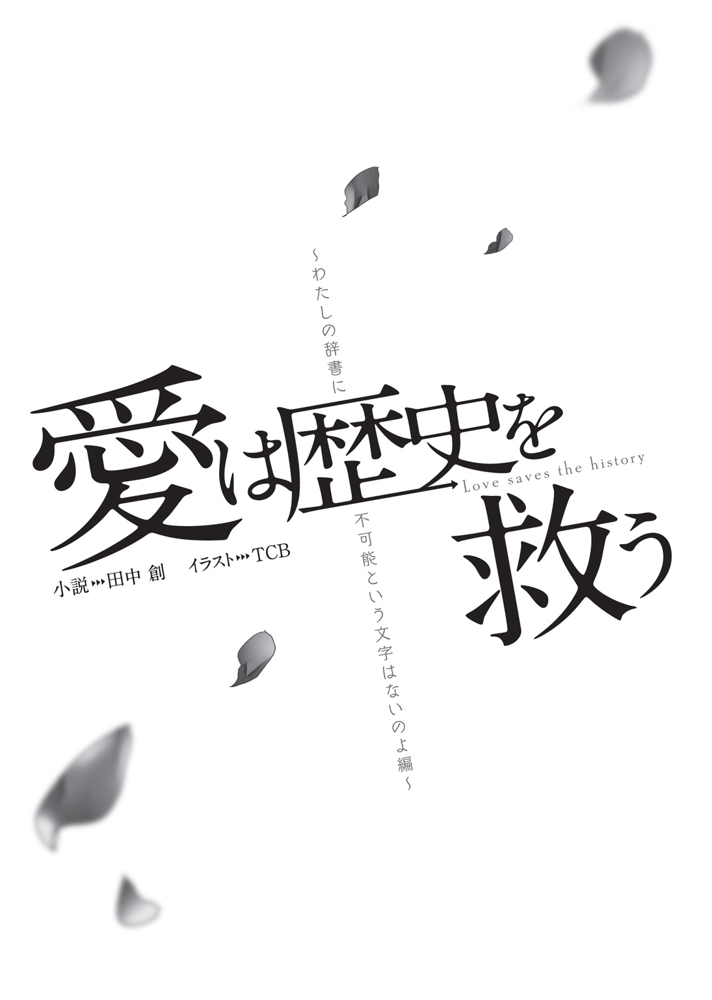

| ［分冊版］愛は歴史を救う～ドジっ子ツンデレ美少女皇帝！・ナポレオン編～ | |
| 田中創 | |
この本は縦書きでレイアウトされています。
また、ご覧になる機種により、表示の差が認められることがあります。



★局員募集★航時局歴史管理課
守れぼくらの歴史！ 時空の命運はキミの手にかかっている！
～概要～
『時震』という現象をご存じでしょうか？
政府主導による時空観測プロジェクトが発足して以来、この言葉を新聞やテレビなどでお聞きになっている方も多いでしょう。
時震とは、四次元的に発生する事象変異現象です。
その原因も発生条件も、詳しいことは何もわかっていません。しかし、時震によって歴史上の重要地点、物品、人物が不可解な変異を遂げてしまうということはよく知られています。
時震は事象を歪め並行歴史を生んでしまうのです。
たとえば去年には、幕末に来航するはずのペリーの黒船が、時震のせいで難破してしまった世界が観測されたことがありました。二十一世紀になっても日本が鎖国を続けている並行歴史が発見されたというのは、まだ記憶に新しいところです。
もちろんこうした並行歴史の出現は、私たちには直接影響はありません。並行歴史の存在によって、私たちが紡いできたこの歴史が変容してしまうわけではないからです。そういう事情から「時震は対岸の火事」と言い切ってしまっているメディアも少なくありません。
しかし、それは大きな間違いなのです。ひとたび出現してしまった並行歴史は、その事象の不安定性ゆえに、さらなる時震を誘発してしまうのです。
ペリーの例を挙げますと、鎖国が続いた状態の日本からは、いくつものおかしな並行歴史が分岐していました。福沢諭吉が無敵の剣豪として諸国を漫遊していたり、マッドサイエンティスト化した野口英世が死者蘇生を成功させていたり――予測不可能な事象変異が山ほど発生していたのです。
時震は新たな時震を発生させ、並行歴史は次々に増えていく。
さて、このような並行歴史が増えていくと、いったいどうなってしまうのでしょうか。
そうです。恐ろしいことが起こります。端的に言えば、宇宙が崩壊してしまうのです。
近年の研究によれば、ひとつの次元が保有できる情報量には限界があり、並行歴史が増えていけばいくほどその容量は圧迫されていくと言われています。情報の許容限界を超えれば、この次元に存在するあらゆる世界が消滅してしまうのです。
もちろん私たちの暮らす、この宇宙も含めて。
ポンプに繋がれ、膨らんでいく風船をイメージしてみてください。それが私たちの暮らす宇宙です。並行歴史という名の空気が増えていけば、風船もどんどん膨らみ続け、やがては破裂してしまうというわけですね。
つまり時震は、私たちにとって対岸の火事ではないのです。この宇宙を守るため、私たちが可及的速やかに行うべきことは、次の二つに集約されるでしょう。
① 時震によって生じた事象変異を、現地に赴き修正し、宇宙崩壊の危機を防ぐ。
② 時震の原理そのものを解明し、抜本的解決を図る。これ以上の並行歴史を発生させない。
そうです。これこそ、航時局歴史管理課――通称ＴＨＲ（Timeport-bureau Historical Retention division）の任務なのです。
ＴＨＲの技術者は、いわば時空を守るヒーローというわけですね。かっこいい！
航時局が設立されてから十年、ＴＨＲはいくつもの事象変異を修正してきました。しかし次々と観測され続ける時震に、対応が追いついていないのが現状です。エージェントが足りていないのです。
航時局は、あなたの情熱を求めています。
あなたも歴史を守るＴＨＲエージェントとして、航時局で活躍してみませんか？
そう、次代のヒーローはあなた！
正しい歴史を救うために、レッツ時空移動！
才能あふれる歴史上のプロフェッショナルたちが、あなたの力を求めています！
～募集要項～
勤務部署：航時局歴史管理課
雇用形態：常勤
勤務開始日：ご相談に応じます
給与：航時局規定による
勤務体制：局員寮住みこみによる二十四時間体制。二交代制。
必要資格：時空技術者（第一種）
※なお時空修正任務には、多分に生命の危険を伴う場合があります。
航時局共済保険への加入を強くお勧めいたします。
文部科学省 航時局 歴史管理課
http://www.xxx.koujikyoku-thr.go.jp
キーボードから手を離し、「こんなもんかな」と頷く。
我ながらなかなかいい宣伝文だ。これなら僕たちに興味を持ってくれる就職希望者も増えるだろう。
僕の今日の業務は、寮の自室でこのＴＨＲ募集パンフレットを作成することである。
本来こういうのは広報課の仕事であり、僕たち歴史管理課が直接手を出すことは少ない。しかし、あえて仕事を引き受けたのには理由があるのだ。
「褒めてくれるかな......フレドリカさん」
このパンフによって入局希望者が増えれば、あのひともきっと喜ぶだろう。
僕の愛しの課長殿は、毎日毎日、猫の手も借りたいと嘆いているのだ。この募集ポスターが功を奏して歴史管理課の人員が増えれば、きっと彼女の業務も楽になるに違いない。
「うまくいったらご褒美がもらえるかも......。一日デートとか」
そんな風に画面の前でニヤケていると、すぐ右隣から、「それはないわね」とダメ出しの声が聞こえてきた。
「だいたいこんな文章じゃ全然ダメよ。大事な表現が抜けてるもん」
そう呟いたのは、二角帽を被った栗色の髪の少女である。
彼女が身につけている白のミニスカ制服は、偉そうなマント付き。まつげの長い目を眇め、彼女はＰＣ画面に指を突きつける。
「『歴史上のプロフェッショナル』ってとこに、〝偉大な〟とか〝美しき〟とか入れるべきよ」
「どうして」
「だってこれ、わたしの素晴らしさを世間の愚民どもに周知させるための文章でしょ」
それが当然、とばかりに少女は大きく頷いた。
ああもう。また面倒なこと言い始めたぞ、この皇帝陛下。
「いや違うよ？ ＴＨＲのエージェント募集の告知だよ？」
「だったら大した違いはないわよ」少女は鼻を鳴らす。「新人エージェントってことは、つまりわたしの部下になるわけだし。ならなおのこと、皇帝たるわたしを讃える文章にすべきね!!」
帽子の少女は、にんまりと口元を歪めた。
この無駄に不敵な笑みの女の子は、フランス皇帝ナポレオン・ボナパルト。近代ヨーロッパを震え上がらせた、常勝無敗の怪物皇帝である。
そんな名の知れた偉人すら小うるさい美少女に変えてしまうのだから、時震とは実に不思議なものだ。
僕は頭を振りながら、
「ともかくナポ子。忙しいんだから邪魔しないでよ」
「邪魔とはなによ。わたしが直々に助言してあげてるのよ？ ありがたく思いなさいよ」
そう言いながらナポ子は、僕の右腕をぎゅっと抱きしめる。二の腕に感じるほのかな柔らかさは、彼女の胸の感触だろう。思わず「ううっ」と呻いてしまう。
「ちょ、ちょっと離れてくれない？ そんなにくっつかれると、キーボード打ちづらいから」
「やだ」ナポ子が頰を膨らませる。「それを言うならアリスも一緒でしょ」
彼女がちらりと視線を向けたのは、デスクの左側である。
見た目小学生くらいのシルバーブロンドの女の子が、僕の左肩に顎を置くようにして身体を密着させている。実はこれ、さっきからずっとなのだ。
「私はナポ子さんのように勝手に口を出しているわけじゃありません。これはれっきとした仕事ですよ」
銀髪幼女――アリスが呟いた。
「私には、この屑隊長の業務を監督する義務があるんです。ＴＨＲのオペレーターですし、なにより愚者を導くのは哲人の役目ですから」
僕のことを躊躇なく屑隊長だとか愚者だとか言っちゃうこの子は、美少女と化した古代ギリシャの哲学者、アリストテレスである。彼女もナポ子同様、時空を超えてやってきたＴＨＲのエージェントなのだ。
僕は「はあ」とため息をつく。
「別に監督されなくても、このくらいちゃんと書けるんだけどなあ」
「いいから私の指示に従ってください。ほら、募集要項のところに『アニメ好き優遇』の一文を入れて」
「それアリスの個人的趣味じゃ......」
「ああ、そうそう。注意書きもお忘れなく。『声優直筆サインの持参で、もれなく好待遇を保証する』と」
「露骨な賄賂要求はどうかと思うよ!?」
「入れてくれるまで、放しませんよ」アリスが僕の左腕をしめつける。
凹凸のない小さな身体の感触は、もはや犯罪的ですらあった。ぺたんとしているのに、なぜだか妙にぷにっぷに。ロリ属性を持たないはずの僕ですら、変な気分になってしまう。
「あのさ、ナポ子もアリスもいい加減にしてくんない？ こんなことしてたら、いつまでたっても仕事が終わらないんだけど」
眉をひそめていると、不意に背後から何者かが僕の首に腕を回してきた。
「なあ隊長さん、それならあたしの希望も入れてくれよ」
「ほ、奉先!?」
黒髪ツインテールの少女が、背後で「へへん」と微笑んでいる。
惜しげもなく僕の背中に押し当てられているのは、ナポ子やアリスなどとは比較にならないくらいのダイナマイトおっぱいだ。むにゅん、という肉感的な弾力には、股間のＪｒ．もビックリ仰天である。
「ちょ、ちょっとあの、胸当たってるんだけど」
「実はさ、いい考えを思いついたんだよ」
慌てる僕などまるでお構いなしに、巨乳ツインテ少女――奉先は続ける。
「応募者全員にルール無用のデスマッチをさせようぜ。そんで、勝者を採用することにしよう」
「いやあのね、ＴＨＲの業務のメインは救助だってわかってる？ 別に血なまぐさい要素は必要ないよ？」
「じゃあ無理にエージェントにしなくてもいいよ。デスマッチ優勝者には、このあたし、呂布奉先との一騎打ち挑戦権が授与されるってことで」
「あくまでデスマッチ案は存続させるつもりなんだ!?」
相変わらずこの子――奉先の発言は血の気が多くてしょうがない。
さすがは古代中国最強の武将というだけはある。実に凶悪な思考回路だった。
ついでに言えば、おっぱいの柔らかさも凶悪なんだけれども。
「......ははあ、パンフ作りも大変ですねえ」
ふとデスクの下から、のんびりした女の子の声が聞こえてきた。
僕の股ぐらから顔を覗かせるようにしてこちらを見上げているのは、おさげにした赤毛が特徴的な、可愛らしい女の子――アルちゃんだ。
「あ、ボクは別に希望とか、そういうのはないですよ？ 応募者がいようがいまいが、たいちょーのおそばにいられればそれだけで幸せですのでー......」
しかしこの子、いつの間に僕のデスクの下に潜りこんだのか。まったく気がつかなかった。
「いや、そんなことよりアルちゃん、そんなとこでなにしてんの？」
「ええとその、お仕事頑張ってるたいちょーを、陰ながら労おうと思いまして」
にこにこと柔和な微笑みを浮かべるアルちゃん。なんと彼女はおもむろに、僕のズボンのジッパーに手をかけたではないか。
「労うって......ええっ!? なんで僕のズボン脱がそうとしてるの!?」
「えへへ。ボク、手先は器用な方ですし......きっと気持ちいいですよ？」
「そ、その器用さは発明だけに使ってくれればいいから!!」
にっこり頰を緩めている彼女の本名は、トーマス・アルバ・エジソン。
甲斐甲斐しさの方向性を思いきり間違っているようなこの女の子も、誰もが知る偉人――アメリカの発明王だったりするのだ。
僕の右腕にひっついているナポ子が、アルちゃんを見てむっと頰を膨らませる。
「いつからそこにいたのよアル。あんたいつも抜け目ないわね」
「そういうナポ子さんだって、毎日たいちょーにベタベタしすぎだと思いますけど......」
「べ、別にわたしはベタベタなんか......!! こいつはわたしのパートナーだし。一緒にいるのは当然だし」
睨み合うナポ子とアルちゃんを横目に、アリスが「やれやれ」と肩を竦めた。
「毎度飽きませんね。ナポ子さんもアルさんも。こんな屑野郎のどこがいいんだか」
「そう言うアリスだって、なにかっつーと普段から隊長さんに絡んでるよな」
苦笑する奉先に、アリスが応える。
「まあ、所詮この男は私がいないと何も出来ないダメ男ですからね。仕方なく面倒見てあげてるだけです。ナポ子さんやアルさんみたいなラブ要素は欠片もありませんよ」
「ちょっとアリス!! わたしがこいつのこと好きみたいな言い方やめなさいよ!!」
眉をひそめるナポ子に、アリスが「違うんですか？」と口元を歪める。
「違うわよ!! 全然まったく違う!!」
「まあまあ。落ち着けよナポ子」と奉先。「度量が小せえやつは、いつまでたっても大きくなれねえぞ」
「くうっ......!! 小さくて悪かったわねっ......!!」
ナポ子が悔しそうに歯嚙みする。奉先の胸を睨みつけながら。
腕をぎゅっと握りしめられ、僕は呻いた。
「あの、ナポ子さん。そんなに締めつけられると痛いんですけど」
椅子の両サイドからナポ子とアリスに抱きしめられ、背後から奉先に胸を押し当てられ、おまけに両脚の間でアルちゃんがよからぬことをしようとしている。
美少女たちにこれでもかと密着されているのだ。一般的な男性としてはある意味嬉しいシチュエーションなのだろうが、心に決めた女性がいる僕にとっては気が気でない。
もしもこんなハーレム状態を彼女に見られてしまったら......どう思われてしまうやら。
「ていうかキミたちさ。いろいろ手伝おうとしてくれる気持ちは嬉しいんだけど、ここまで身体をくっつけられると、倫理的にいろいろ問題がね――」
僕が口を開いたその瞬間。部屋のドアが、がちゃりと音を立てて開いてしまった。
「ミツキくん、パンフ作成の調子はどう？」
ドアから顔を覗かせたのは、ダークスーツ姿の見目麗しい知的な美人だった。
ああ、なんて間が悪い。彼女こそ僕の上司であり、長年の姉代わりでもある女性――航時局歴史管理課における最高責任者、高嶺フレドリカさんだ。
彼女は僕たちの姿を見て「あ」と硬直する。
「ナポ子ちゃんにアリスちゃん、奉先ちゃんにアルちゃんまで......何してるの？」
「何って、その」
「そんなにみんなでくっついて、おしくらまんじゅう......じゃないよね？」
フレドリカさんが、不審げに首を傾げた。
仕事をしていたら、同僚たちがいつの間にか部屋に不法侵入していた――。そう説明して、果たして信じてもらえるものだろうか。
「もしかしてミツキくん、女の子たちを部屋に連れこんで、イケナイことしようとしてたとか」
美しく整った彼女の眉は困惑に歪み、頰は真っ赤に色づいてしまっていた。
ああ......これはもうフレドリカさん、完全に誤解していらっしゃる。
「ち、違いますよフレドリカさん!? 僕はちゃんと仕事してましたよ!?」
必死で言いすがる僕だったが、フレドリカさんの表情は硬い。爛れきった弟の性生活を覗き見てしまい、言葉に詰まる姉――そんな面持ちである。
「まあ股間を大きくしながら『ちゃんと仕事してました』なんて言っても、まるで説得力ありませんけど」
アリスがぼそりと呟いた。
この哲学娘、僕を擁護するつもりはまるでないようだ。むしろ僕が困っているのを見て楽しんでいやがる。ちくしょうめ。
フレドリカさんは宙に視線を彷徨わせながら、
「お姉ちゃん、あんまり厳しく言うつもりはないんだけど......とにかくその、えっちなことするなら、せめて部屋の鍵くらいはかけてね？」
「し、しませんよそんなこと!?」
「いいのいいの。ミツキくんたちもお年頃だもんね。そういうことに興味あるもんね」
そう言いながら、フレドリカさんはバタンとドアを閉めてしまう。
「待ってくださいフレドリカさん!! これは違うんです!! 誤解なんです!!」
「その、お姉ちゃん気が利かなくてゴメンね、邪魔しないうちに帰るね」
ドア越しにそれだけ言って、フレドリカさんは離れていってしまったようだ。
「ああ!! フレドリカさん!! カムバアアアアック!!」
しかしそう叫んでも、足音が戻ってくることはなかった。なんて無慈悲な。
背後の奉先が「ははは」と軽快に笑う。「まーたフラれたな、隊長さん」
「その、元気出してくださいね？ ボクはいつでもおそばにいますから」
アルちゃんまで僕を見上げながら、そんなことを言っていた。
「いや、キミらね......」思わずため息が出てしまう。
そう。僕――御戸ミツキはフレドリカさんに恋い焦がれている。もう十年近く前から、ずっと。
この想いを遂げるため、僕は彼女を追って航時局に入局し、ＴＨＲで時空修正任務に従事しているのだ。
全てはフレドリカさんに、僕の男らしさを認めてもらうため。そして彼女と添い遂げるため。そのためなら、危険な時空修正任務に挑むのだって怖くない。
そう覚悟しているはずなのに、どうしてこういつもうまくいかないのだ......!!
「ま、そもそもミツキなんかにフレドリカは似合わないと思うけどね」
ナポ子がなぜか、にんまりと目を細めた。
「おまえのパートナーはわたし。そう決まってるの。おまえはわたしと一緒に全時空の覇者になるのよ。それでいいじゃない」
毎度のごとく、無駄に偉そうなナポ子だった。
思えば彼女がＴＨＲに来てからというもの、フレドリカさんとの距離がますます開いていってしまっているような気がする。ちょっとした疫病神かもしれない。
近代ヨーロッパの怪物皇帝、ナポレオン・ボナパルト。
彼女と出会ったのは、僕の主観的には一か月ほど前――。
歴史的には、二百年ほど昔の話だ。

見渡す限りの白銀の世界に、大部隊が進軍する。
その数四万。欧州最強の砲兵部隊を擁する、フランス共和国の精鋭たちだ。
先頭に立つのは立派な駿馬と、その上に跨がるひとりの少女だった。
「わ、わたしの辞書に、不可能という文字はないのよ!!」
寒さに堪えられないのだろう。少女はお気に入りの言葉を叫びつつ「ぐずっ」と鼻を啜る。
彼女は、この部隊を率いる司令官だった。
金の刺繡が入った赤いマント。仰々しい二角帽。濃紺の上着の下に、太もも眩しい白のミニスカートを合わせた珍妙な軍服姿だ。ふりしきる豪雪の中、彼女はぶるぶると白い肌を震わせている。
どこからどう見ても、年端のいかない普通の女の子であった。
しかし、それでも彼女は、数万の兵を束ねる総司令官なのである。
時空の見えざる手が、歴史をそう変質させてしまったのだ。
「と、とてつもなく寒いけど、それは敵も同じよ。わたしたちがアルプス山脈を越えてくるなんて、夢にも思わないでしょうね。麓で呑気に雪解けを待ってるはずだわ」
少女は震えながら先を続けた。
「だからチャンスなの。相手がのんびり構えてるところに突撃をかければ、一気に勝てちゃうはず!!」
「そううまく行くものですかな」
部下のひとりが進言する。少女よりも二回りは年上の、髭面の将軍だ。
「それより先に、わが軍の兵が寒さで凍え死ぬかもしれませぬぞ」
「なによ。怖気づいてるの？ ちょっと寒いくらい我慢しなさいよ」
「ちょっと寒い、どころの話ではありませんぞ。司令官」
将軍以下、部下たちは一斉に顔をしかめた。
すでに季節は五月も半ばだというのに、冗談かというほどの豪雪である。イタリア方面への街道は雪深く、一メートル先すら見通せないほどの吹雪が吹きすさんでいた。
銃剣を握る兵士たちも、小刻みに震えながら身を寄せ合っていた。こんな状況で進軍するなんて正気の沙汰じゃねえ――。誰も彼もが、顔にそう書いてあった。
「ああもう。なんて情けないのよ」少女が口を尖らせる。「おまえたちわたしの部下でしょ。誇り高きフランス共和国軍兵士でしょ」
「そう言われましても......誇りで暖は取れませぬ」
部下の言葉を、少女は「はん」と鼻で笑う。
「頼りにならない部下なんか、やっぱり連れてくるんじゃなかった」
「なんですと？」部下たちは、そろって目を丸くする。
「もういいわ。おまえたちはさっさとパリに帰りなさい。オーストリア軍は、わたしひとりで蹴散らしてくるから」
「ひ、ひとりで!? 何をおっしゃるのです!! 敵は五万の軍勢ですぞ!?」
「いつも言ってるでしょ!! わたしの辞書に不可能という文字はないって!!」
少女が手綱を握りしめると、彼女の愛馬はヒヒンといなないた。力強く前足を振り上げ、勢いよく雪道を駆け出したのである。
「突撃ーっ!!」
「司令官!? イタリアはそちらではありませぬ!! それは山奥へのルートですぞ!!」
しかし、将軍の声は、少女の耳には届かなかった。
少女の馬はすでに部下たちの視界の外。この豪雪の中では、蹄の音すら聞こえない。
部下たちは揃って顔を見合わせる。
「うちの司令官って、あんな勢い任せの人間だったっけ」
「さあな......。それを言うなら、そもそも女の子だったかどうかも怪しいぞ」
１８００ ５15 イタリア グラン・サン・ベルナール峠
５15 イタリア グラン・サン・ベルナール峠
じんじんする頰をさすりながら、僕――御戸ミツキは、ゆっくりと目を開く。
あれ？ ここはどこ？
朦朧とする意識の中で、僕は顔面に尋常ではない痛みを感じていた。誰かにしこたま殴られでもしなければ、さすがにこうはならないだろう。
「ようやく起きたか、隊長さん」
気づくと目の前には、黒髪ツインテールの同僚がいた。彼女はなにやら呆れたような表情で、僕の胸倉をつかみあげている。
「ほ、奉先？」
彼女が身につけているのは、特注のデザインの航時局女子制服だ。大きく開かれた胸元とスカートの深いスリットは、いつ見てもエロい。
彼女がこれを着ているということは......どうやら今は任務中らしい。
「隊長さんがなかなか起きねえから、つい思いきりぶん殴っちまった。勘弁な」
「え？ ぼ、僕、寝てたの？」
そこでようやく僕は、自分が野外にいることに気がついた。
野外というか......大自然の中だ。見渡す限り真っ白。丘陵を彩る銀世界。抱いた感想といえば、「超寒い!!」の一言である。
なにせ、吐いた息が凍りつきそうなほどの、怒濤の吹雪の中なのだ。今が昼か夜かもわからないぐらいに激しく吹雪いている。
呆気に取られる僕を見て、奉先が付け加えた。
「あたしらふたりは今、十八世紀末のアルプス山脈で要救助者捜索任務中だ。〝ナポなんとか〟っていう皇帝様のな」
「そうだっけ？」なんだか記憶が定かじゃない。
「でもまあ見ての通り、こっちが要救助者になりそうなくらいの大吹雪の中で立ち往生してるわけだが」
「というか僕、そんな状況でグッスリ寝てたわけ？」
「着地ミスだ」奉先が肩を竦める。「時空移動アプリの座標設定がおかしかったのかもな。隊長さん、十メートルくらい上から落っこちて頭打ったんだよ」
僕はだんだんと、自分の置かれた状況を思い出してきた。
そうだった。今は任務中。ここは西暦一八〇〇年のアルプス山脈だ。
ついさっきフレドリカさんからの命令を受け、この雪山に「飛んで」きたというわけである。「ナポレオン・ボナパルトの遭難救助」――それが今回のミッション内容だった。
何気なく後頭部を擦ると、大きなたんこぶが出来ているのがわかる。
原因はおそらくあの子だろう。どうせいつもみたいに、僕のときだけいい加減なオペレートをしたに決まっている。そのせいで僕はズレた座標に転送され、落っこちて頭を打ったのだ。地面が雪に覆われていなければ、たんこぶ程度では済まなかったかもしれない。
「怪我すんのは、普段からの鍛え方が足りねえからだぜ」
奉先が白い歯を見せて笑う。
「あたしなら、成層圏くらいから落下しても無傷で済むだろうけどな」
「世の中みんな、自分みたいな超人だと思わないでくれる？」
顔をしかめる僕を見て、奉先は頰を緩めた。
「ま、隊長さんの意識が戻ってよかったよ。この雪の中で気絶したまんまじゃ、間違いなくあの世逝きだったからな」
ともあれ奉先は命の恩人というわけだ。
「さんきゅ」と軽く頭を下げつつ、僕は腕時計型端末の液晶画面をタッチする。
これはウェアラブル多機能次元端末――タキオンウォッチ。様々な便利アプリの詰まった、ＴＨＲ業務の必需品だ。
コンソールから、周辺状況確認アプリを呼び出す。
「ええと......ここはベルナール峠の五合目付近。氷点下二〇℃だって」
「身体が冷えるわけだぜ。あたし寒いのは苦手なんだよな......」
奉先が、歯をガチガチと嚙み合わせて身震いする。
「三国志最強の武将でも、寒さは苦手みたいだね」
「武将も何もねえって。こればっかりは鍛えてどうにかなるもんでもねえしな」
そう言う彼女の名は呂布奉先。
中国後漢末期の英雄にして、人類史上屈指の武将と称される人物である。
戟や弓の達人として、「三国志」のライバルたちに恐れられた武闘派偉人――そんな人物が、なぜ僕を「隊長さん」と呼んでいるのか。どうして巨乳ツインテの美少女なのか。どういうわけで十八世紀末の雪山で震えているのか。
それもこれも、全ては〝時震〟のせいだと言っていい。
「てかさ奉先。そんな露出度高い服着てるから余計に寒いんじゃないの」
「しょうがねえだろ。いきなりこんな吹雪の中に放りこまれるとは思ってなかったんだよ」
確かに奉先の言う通りではある。猛吹雪とは聞いていたが、さすがにここまでとは思わなかった。僕だって、現場の天候がこんな状況だと知っていれば、防寒具のひとつくらいは準備してきていただろう。
「いくらアルプスつっても、五月でこの吹雪は異常だよなあ。これも時震の影響なのか？」
「と、とにかくこのままじゃマズイよね。本部に連絡を取ろう」
タキオンウォッチをタップし、通信アプリを作動させる。
数秒間の呼び出し音のあとに、「接続完了」のメッセージ。ウォッチの液晶部分から半透明な立体映像が投影される。
『......はいはい、なんですか』
現れた映像は眠そうな顔の女の子――アリスだ。
航時局制服の上にアカデミックなケープを合わせたこの子は、僕たちＴＨＲのオペレーターである。見た目だけならローティーン。こまっしゃくれた幼女だ。
僕の左手首あたりに映るアリスに向けて、奉先が口を開く。
「おいアリス。寒すぎる。なんとかしてくれよ」
『なんとかって......そっちの吹雪を止めろとでも？ 一介の哲学者には無理な相談ですよ。私は全知であっても、全能じゃないんですから』
さりげなく自分を「全知」とか言っちゃう彼女の正体は、言わずと知れた古代ギリシャの哲学者、アリストテレスである。時震は西洋最大の哲学者すら、こんな生意気幼女に変えてしまったのだ。
まあ本人はそんなこと特に気にしていないようなので、別にいいのだが。
「いや別に吹雪を止めろとは言わないけどさ......せめて準備のために一旦戻らせてくれない？」
しかしアリスは、そんな僕の嘆願を『無理です』と即座に切り捨ててしまう。
『現場のヘタレ隊長はご存じないでしょうがね。時空移動アプリの使用は、上の認可を取るのが非常に面倒なのです。課長だけじゃなく、局長のハンコも要りますから』
「......お役所仕事だなあ」
『そりゃ公務員ですからね。私たち』
アリスの言う通り、僕たち――航時局歴史管理課（通称ＴＨＲ）は政府に管理される公的機関である。消防庁のレスキュー隊とか、海上保安庁の特殊救難隊とか、そのあたりと同じカテゴリの組織に属しているというわけだ。
災害現場に赴いてひとびとを救助するのが通常のレスキュー隊なら、変質してしまった過去の並行歴史に赴いて偉人たちを救助するのが、僕たちＴＨＲなのである。
もちろん、単純な人命救助以外にも、失せ物探しや偉人の仕事の手伝いなど、歴史修正任務の種類はそのほか多岐にわたるけれども。
傍らの奉先が、「確認なんだが」と口を開く。
「今回は〝ナポなんとか〟ってすげえ有名な皇帝様を助けるんだよな。この雪山で遭難したっていう」
奉先の問いにアリスが『はい』と応える。
「そいつ、どんなやつなんだ」
『フランス皇帝ナポレオン・ボナパルト。簡単に言えば、向かうところ敵なしという戦争の天才でしょうか。〝ヨーロッパの怪物〟と恐れられた偉人です』
「怪物!! そりゃ強そうな皇帝様だな!!」
『実際に皇帝になるのは、おふたりのいる時間軸から数年後ですけどね。今はイタリア遠征の総司令官のはずです』
「へえ」と鼻を鳴らす奉先に、アリスが続ける。
『本来の時間軸であれば、ナポレオンはこの雪山を無事に乗り越え、イタリア方面に攻め入っている頃合いでした。しかし時震の影響のせいか、かの司令官は遭難してしまったのです』
「確かにこの雪じゃ、どんな猛将だろうがひとたまりもねえだろうけどなあ」
そういう奉先も身体を震わせている。
「んで結局、どんだけすげえんだ？ そのナポなんとかは。あたしより強えのか」
『どうでしょうね。ただ、個人の武力というよりは、統率力に優れた人物だったようですよ』
「ほう、統率力」
『アルプス越えに躊躇する部下たちを、〝フランス人の辞書に不可能という文字はない〟という言葉で奮い立たせたエピソードとか......あまりにも有名ですね』
「アルプスって、もしかしてこの雪山？」僕も口を挟んでみる。
『そうですよ。御戸さんたちは、まさに歴史が生まれた場所にいます』
「ふうん。そう聞くとなんだか感慨深いね」
『というか、隊長のくせにそんなことも知らなかったんですか。無知蒙昧も甚だしい』
「はいはい、ダメ隊長で申し訳ありませんね」
全知を自称するだけあって、さすがアリスは僕なんかよりずっと物知りだった。これで僕に対する当たりの厳しささえなければ、優秀なオペレーターなんだけどなあ......。
「でも実際、よっぽど気合い入れなきゃこの雪山はツライよ。ビビる兵隊さんたちの気持ちもわかる」
身を刺すような寒さ、とはよく言ったものである。
氷点下二〇℃の世界は、寒いというよりむしろ痛い。吹きつける吹雪に生命力を徐々に削り取られていくような感覚というか......。一時間も歩けばぶっ倒れるのは目に見えていた。
こんな状況で救助活動をするなんて、無謀というしかないだろう。
この時代の兵隊さんたちがどんだけ超人揃いなのかは知ったこっちゃない。ぬくぬくの環境で育った現代人の辞書には、不可能の文字だってちゃんと存在するのだ。
「せめて毛布のひとつも欲しい......」
『ほんとヘタレな隊長ですねあなたは』アリスがため息をつく。『泣き言を言う前に、さっさと要救助者を助けに行ったらどうです』
「気楽に言うなあ」
『タキオンメーターによれば、現在の歴史変異率は三十五パーセント。呑気に構えていい数値じゃありませんよ』
タキオンメーターとは、時空観測技術が生み出したＴＨＲ必携アプリだ。発生中の並行歴史の総情報量を算出し、この宇宙がどこまでそれを許容出来るかをわかりやすく数値化してくれるのである。
歴史がおかしくなればなるほど、つまり正史から分岐する並行歴史が増えれば増えるほど、このメーターの数値が増加する――。簡単に言えばそういうことだ。
『歴史変異率が百パーセントに至ったらどうなるか、いちいち私の説明が必要ですか？』
「そのくらいはわかるってば。宇宙が破裂するんでしょ」
頷く僕を、アリスは『あなたにもそのくらいの知識はありましたか』と鼻で笑う。
『一応未来から応援くらいはしてあげます。コタツでテレビ観ながら、ですけど』
「応援ってか、挑発だよねそれ」
ああもう。アリスと話をしていると、やる気なくなってくる。
そもそも僕は、いったい何のためにこんな命がけの任務に就いているのだろう。少なくとも、毒舌幼女にディスられるためではなかったはずだ。
吹雪の中、人生の無情さについて悶々と悩み始めたそのとき――タキオンウォッチから、女神のごとく慈愛溢れる声が聞こえてきた。
『ミツキくん、大丈夫？』
通信アプリに新たに現れたのは、ナイスバディな碧眼美女だ。
ミツキくん脳内ランキング「今最も声を聞きたい女性」部門で栄えある第一位を獲得した、キュートでセクシーでラブリーな、僕の憧れの上司である。
「フ、フフフ、フレドリカさん!! お疲れさまですっ!!」
アプリの立体映像だろうと、相手が彼女なら僕はもちろん敬礼を忘れない。
そんな僕の姿を見て、フレドリカさんはくすりと笑みを浮かべた。
『ごめんね。急に観測された時震だったから、現場の環境情報が把握できてなくて......。そっちは思ったよりもひどい吹雪みたいね。寒くない？』
「いえいえ!! フレドリカさんへの愛の炎があれば、こんな吹雪、そよ風程度のもんですよ!!」
脇で奉先が「また始まった」と顔をしかめていたが、構うことはない。愛するひとがそこにいるなら、雪山だろうと世界の中心だろうと、僕は何度だって愛を叫ぶのだ。
「もうね、フレドリカさんのためなら火の中水の中草の中雪の中!! 任務達成後のムフフなご褒美のために、誠心誠意努力する所存でありますよ!!」
『ム、ムフフなご褒美は......ちょっとあげられないかな、うん......』
フレドリカさんが表情を引きつらせていた。
いつも優しげなこのお姉さんも、僕の情熱的なアプローチを受けたときだけはなぜか微妙な表情をしてしまうのである。残念なことに。
相変わらずの難攻不落っぷり......だがそこがいい!!
「なにも最初から全てを要求しているわけじゃないんですよ。ムフフ系が無理なら......ちょっと婚姻届に実印を押していただく。それだけでもいいんです!!」
『お、重すぎるよ、そのご褒美!!』
「〝愛と漬物石は重い方がいい〟――古代ギリシャにはそんな格言もあるとか」
アリスの立体映像が『ありませんよバカですか』と僕を睨みつける。
ドライな子だった。たまには空気読んで僕の味方をしてくれてもいいのに。
『あ、あのねミツキくん』フレドリカさんが苦笑する。『いつも言ってるでしょ。私たちは上司と部下だし......それ以前に、姉弟みたいなものじゃない？ さすがにキミの気持ちに応えるわけには――』
そうなのだ。僕にはとある事情があって、彼女と家族同然の暮らしをしていた時期がある。九歳から中学卒業までの七年間――。そんな長い時間を、僕はフレドリカさんと共に過ごしていたというわけだ。
さてここで問題。思春期の多感な少年がこんなセクシーなお姉さんに拾われ、ひとつ屋根の下で甘やかされてしまえば、いったいどうなってしまうのか？ 答えは簡単。「惚れてしまう」のである。
彼女との暮らしの中で、僕は何度あのおっぱいを夢に見て、何度自分でパンツを洗ったことか。
「きょ、姉弟じゃダメなんでしょうか!?」
『え？』映像のフレドリカさんが首を傾げる。
「そもそも血が繋がってるわけでもないですし、入籍してもオーケーというか、合体だって出来ちゃうというか......何の障害もありませんよ!?」
『そういうことじゃなくてね。私がミツキくんを弟だとしか思えないというか』
「そこはきっと、時間が解決してくれると思います!! 恋人的な振る舞いをしていくうちに、フレドリカさんも次第に僕をひとりの男として認めるようになるはずです!!」
『ひとりの男って......』
「そうだ!! 帰ったらデートしましょう!! こないだネットで見つけたんですけど、新規オープンの遊園地が結構雰囲気良くて――」
『ああもう!! そんなことより御戸隊長、今は任務に集中しなさいっ!!』
他人行儀な呼び方をされてしまい、僕は「はっ!?」と我に返る。
「ぼ、僕としたことが!! すみません!!」
そうだ。任務をおろそかにして、フレドリカさんに嫌われたのでは元も子もない。
大時震だとか宇宙消滅だとか、実は細かい事情はどうでもいいのだ。僕がＴＨＲに所属している最大の目的は、彼女と添い遂げること――ただひとつなのである。
手柄を立てる → フレドリカさんに褒められる → 結婚 → ハッピーエンド
どうよ、これ？
僕の頭の中には、一分の隙もない完璧な未来予想図が描かれていた。これを実現させるためには、雪山ごときに二の足を踏んでいるわけにはいかないのだ。せめて来年、僕が二十歳になる頃までに、婚約くらいは済ませておきたいと思っていることだし。
「不肖この御戸ミツキ!! 任務に全身全霊を尽くします!! フレドリカさんとの未来のために!!」
『あ、うん。私との未来のためじゃなくて、要救助者保護のために頑張ってね』
「......さらっと流したな、フレドリカ姐さん」
奉先に哀れみの目を向けられてしまった。
でも僕泣かない。ミツキは強い子!!
『大変だと思うけど......救援物資と人員を送ったから、それでなんとかしてみてね』
それじゃ、と一言言い残して、フレドリカさんの映像が消失する。
「フ、フレドリカさん!? もしもし、もしもし!?」
どうやら通話は一方的に切られてしまったらしい。ちょっぴりショックだ。
「ありゃ脈なしだと思うぜ、隊長さん。いい加減諦めればいいのに」
軽口を叩く奉先を睨みつけ、僕はため息をついた。
まあ気持ちを切り替えよう。まずは任務だ。要救助者を速やかに救出し、フレドリカさんに褒めていただくのだ。
「んでも、人員っていったい誰が来るんだろうな」と奉先。
「そりゃまあ......あの子しかいないんじゃないの」
と、そのとき、背後から「たいちょー」というか細い声が聞こえてきた。
振り向くとそこには、モコモコした小動物......もとい、暖かそうなファーコートをゆったりと着こんだ、小柄な女の子がいた。
「お、お待たせしました......。たいちょーに奉先さん」
「アルちゃん!!」
僕が名前を呼ぶと、コートの女の子――アルちゃんはにっこりと目を細めた。
トレードマークは赤毛のおさげに、垂れ気味の大きな目。この大人しそうな子もＴＨＲの同僚だ。
本名はトーマス・アルバ・エジソン。彼女もまた、誰もが知る歴史上の偉人だった。
「え、えと......課長さんに準備を頼まれたので......」
アルちゃんはそう言いながら、両手の荷物をひとつずつ僕と奉先に手渡した。結構な重量のナップザックだ。手にした瞬間、ずっしりとくる。
「なんだこれ？」奉先が首を傾げた。
「防寒着とか食糧とか、救命器具とか......その手のサバイバルキット一式です。雪山での人探しは、かなり大変だと思いまして......」
「へえ、そりゃありがたいな」
僕たちは荷物の中からコートを取り出し、さっそく袖を通してみる。
あつらえたようにサイズはピッタリ。おまけにぬくぬくと暖かい。どういうわけか、生地自体がカイロのように発熱しているのだ。
「すごいなこれ。着ただけで生き返るみたいだ」
「あ、気に入っていただけました......？」アルちゃんが頰を緩める。「流体式自己発熱ナノファイバーを利用した、体温調節機能付きのコートです。これ一着で氷点下一八〇℃まで耐えられるんですよ」
「そりゃまたすごい。さすがアルちゃんだね」
偉人たちはみなそれぞれ、偉人と呼ばれる所以となった常人ならざる才能を有している。このアルちゃん――トーマス・アルバ・エジソンの場合は、わかりやすく〝発明〟という才能だ。
この発熱コートしかり。それからタキオンウォッチ内蔵の便利アプリしかり。
アルちゃんはその〝発明〟の才によって、魔法にしか思えないほどの超科学アイテムを開発してしまうのである。彼女のアイテムによって、これまでどれだけ僕たちが助けられてきたことか。
「よしよし。今回もよく出来ました」
いつものように頭を撫でてやると、アルちゃんがにっこりと微笑んだ。
「えへへ......たいちょーに褒めてもらえると思って、頑張ったんです......」
この子、僕に頭を撫でられるのがとても好きなのだそうだ。
なんとなくペットの犬っぽい。犬飼ったことないけど。
「ああ。さすがアルだぜ。これなら寒さを気にせず、思う存分やれそうだな」
コートを羽織った奉先は、いつの間にか身の丈ほどの巨大な戟を手にしていた。穂先に凶悪なデザインの刃がついた、彼女の愛用武器――方天画戟である。
「麓の方から戦の気配がする。こいつの出番は近いぜ」
「え？ 戦の気配？ そんなの全然感じないけど」
「ま、隊長さんには気を読むのはまだ無理かな。でもあたしはビリビリ感じるぜ。戦場特有の荒っぽい空気ってやつをな」
そんなバトル漫画めいた台詞も、奉先が言うと冗談に聞こえない。
「きっとアレだろ。例の怪物皇帝とやらの軍隊が戦ってやがるんじゃねえのか」
「まあ、それはあるかもね。遠征って言ってたくらいだから、今戦争中なんだろうし」
奉先は楽しそうに唇を歪め、方天画戟を肩に担ぎ上げた。
「なら、ここはバトりに行くしかねえな」
その突拍子もない言動に、僕もアルちゃんも目を丸くしたのは言うまでもなかった。
「なにそれ」
「そりゃ、強いやつと戦うのがあたしの生きがいだからな」
そうだった。この武将娘のバトルマニアぶりは、ちょっと普通じゃない。歴史上の強者に挑戦するためにＴＨＲに所属している――そう公言してはばからないのである。
可愛い顔しているくせに、格ゲーの主人公みたいな女だった。
「いや、今回の任務は人命救助だろ。積極的に戦争に参加する必要はどこにもないと思うんだけど」
「まー固いことは言うなって、隊長さん」ぎらついた目で、奉先が笑った。「戦闘に巻きこまれたら救助どころじゃねえだろ？ 面倒なことになる前に、あたしがちゃちゃっと片づけてきてやるぜ」
「いや、キミが出て行った方が面倒なことになりそうなんだけど......」
「んじゃ、要救助者の保護の方は任せたぜ!!」
奉先は軽々と戟を振り回しながら、そのまま吹雪の向こうへと走り去ってしまう。
まったくもってひとの話を聞かない女である。取り残された僕とアルちゃんは、顔を見合わせることしか出来なかった。
「い、行っちゃいました......」
「心配だよね......。あいつに狙われた兵隊さんたちが」
僕はタキオンウォッチをタップし、再び通信アプリを起動する。
『なんですか、もう』アリスはなぜか不機嫌顔だった。
「奉先が勝手にどっか行っちゃったんだよ。そっちから連絡して呼び戻してくれ」
『いやです面倒くさい』
「はい？」何その態度。
『私は他にやることがあるんです。忙しいんです』
「いや、忙しいって......。オペレーターでしょキミ。他になんの仕事があるの」
『今いいところなんですよ。竜の巣を抜けて、ようやく天空の城を発見したところなんですから』
こともあろうにアニメ鑑賞中だった!! 絶対それ今関係ない!!
「ひとが命がけで雪山探索しようってのに何してんの!? 仕事しようよ!!」
『ヤですよ。だって奉先さんの面倒を見るのは、隊長の仕事でしょう。あなたのミスを尻ぬぐいするなんてゴメンです』
「ぐうっ......!!」
僕のミスと言われてしまえばまあ、その通りなんだけども。
しかし、ここで引きさがるわけにはいかない。部下に舐められたら隊長の名折れだ。
「いや、そういう話じゃなくてね？ 僕はただ真面目に仕事をしろって言ってんだけど」
『知識の収集は哲学者の仕事です』
「そっちじゃなくて、オペレーターの仕事を――」
『うるさいです。バルス』
アリスは謎の呪文を吐き捨て、通話を一方的に打ち切ってしまった。再度通話を試みても、まったく応答する気配はない。アニメに夢中なのだろう。
「くっそう......。どいつもこいつも自分勝手すぎる......!!」
「あ、あの......。気を病まないでください、たいちょー。ボクは味方ですから......」
僕を見上げて、アルちゃんがぐっと握り拳を作ってみせる。
ああ。天使だこの子。ＴＨＲの唯一の良心と言ってもいい。
「ええと......その、奉先さんはボクが連れ戻してきますから」
「アルちゃんが？」
「は、はい。奉先さんを止めるのは、たぶんボクの方が適任だと思いますので......」
確かにこの子の言う通りだ。なんの力もない僕では、あのじゃじゃ馬娘を止めることは不可能に近い。
「わかった。頼むよ。あいつはアルちゃんに任せる。要救助者は僕がなんとかするから」
「りょ、了解ですっ......!!」
びしりと敬礼をして、アルちゃんがにっこり頰を緩めた。
その微笑みは、極寒の雪山に咲いたエーデルワイスとでもいうべきものだった。この子の優しさがなければ、僕はおそらく心が折れていただろう。ホンマええ子や......。
「そ、それでは......!!」
とてとて、と奉先のあとを追うアルちゃん。なんだか歩き方も可愛らしい。
その後ろ姿を見送り、僕はタキオンウォッチの地図アプリを起動する。
「さて、こっちも探すか」
この峠付近の三次元地図が、虚空に投影される。
点滅している赤い点が事象の歪みの中心点。すなわち時震源だ。それが今回の要救助者――ナポレオン・ボナパルト氏の現在地点である可能性は高い。
「ここから二百メートルくらいか」
よかった。さほど離れてはいない。
「光点がまったく動かないってことは、大人しく救助を待ってるのかな......。怪我してたりしたら最悪だけど」
赤い点を目指し、僕は吹雪の中を歩き出す。
この任務が終わったら、僕はもう一度フレドリカさんに結婚を申しこむんだ――!! そうやって自分を鼓舞すれば、多少の寒さなどへいちゃらなのである。
死亡フラグ？ なにそれ？
そしてすぐに、赤い点の座標は見つかった。
僕の目にまず入ってきたもの――それはパンツだった。
「おおう!?」
少女の下半身を覆う、黒のシルク。余分な柄やフリルのない、洗練されたデザインの逸品だ。小ぶりなお尻にバッチリと食いこんだそれは、僕の視線を捉えて離さなかった。
だがそれも仕方ない。少女の姿勢のおかげで、パンツはもろに全開。縫い目まではっきり見えるほどの御開帳ぶりだったのだから。
「ぐすっ......なに、見てるのよ」
パンツの主が、下からじっと僕を睨みつけている。
深い谷底を覗く崖際。少女は逆さ吊りだった。
歳は僕より少し幼いくらい。偉そうなマントに偉そうな軍服を身につけた、なんだか偉そうな態度の女の子だった。そんな子が逆さまの姿勢で、涙目になっている。
うん。どう見ても普通じゃない。一八〇〇年の世界でミニスカ軍服姿だというのが、まずおかしい。時震の影響を受けているのは明らかである。
しかしそのミニスカートも、逆さ吊りの状態では本来の役割を果たしていなかった。重力に負け、きっちり裏返ってしまっているのだ。おかげでパンツもろ見せ状態である。
「しかし、エロさよりもバカバカしさが際立っているのはなぜだろう......」
崖から突き出たように生えている木の枝に、片足首だけが引っかかった宙ぶらりんの姿勢――。なにが起こればこんな格好になるのか。まさかギャグでやってるんじゃないよな。
少女が目を潤ませながら、怒声を放つ。
「か、勝手にひとのパンツを見るんじゃない!! この無礼者!!」
彼女は必死にスカートを両手で押さえ、僕の視線からその可憐な薄布を隠そうと試みているようだった。だが、無駄な努力である。万有引力には逆らえない。
「いや不可抗力でしょこれ。出会った瞬間からパンツ丸出しの方がどうかと思うけど」
「う、うるさい!! 丸出し言うな!!」
「だって丸出しだし......」
「だいたいなんなのよ、おまえのその態度!! うう......ひっく、このわたしを誰だと思ってるの!? フランス共和国第一統領よ!! 軍の総司令官よ!! この世で一番偉いのよっ!!」
ぎゃーぎゃーうるさい小娘だった。泣き顔を誤魔化そうと、虚勢を張っているのだろうか。逆さ吊りの状態からここまで偉そうな言葉を吐けるとは。逆にすごい。
「ええとキミ、もしかしてナポレオンちゃん？」
「そうよ。......ぐず、未来の皇帝陛下よ」
少女――ナポレオン・ボナパルトは得意げに腕を組む。
おかげで再びパンツは全開に......。
もっとも、それを指摘すると余計な火種になりそうだったので、あえてそっとしておくことにした。僕って大人。
「で、その未来の皇帝陛下が、なんでこんなところで宙吊りになってるの」
少女は、涙まじりに答えた。
「て、敵陣に突撃しようと馬を走らせてたら、急に振り落とされたの」
なるほど。確かに周囲の雪の上には蹄の跡があった。崖際に落ちている黒い二角帽は彼女のものだろう。馬上から投げ出され、運悪くこういう体勢になったらしい。
「落馬した上に、そのまま勢いで崖から落下......ドジな皇帝陛下だなあ」
「う、うるさいわね。わたしを侮辱するつもりなら、ギロチン送りにするわよ」
不遜な態度だけは皇帝レベルだった。
「でも、なんで皇帝陛下がひとりで敵陣に突撃しようとしてたわけ？」
「そりゃ、どいつもこいつも根性のない、使えない部下ばっかりだったからよ。わたしひとりで戦った方がまだマシだと思ったの」
不慮の事故で宙吊り＆パンツ全開になってしまった涙目の女の子が、何だか偉そうなことを言っている。こんな皇帝に、「使えない」と評されてしまった部下たちの心中はいかほどだったのか。可哀相に。
「でもまさか、ナポレオンまで女の子になっちゃったとはね......」
気の強そうなつり目に、少しクセのあるブラウンの髪。目鼻立ちはずいぶんと可愛らしく、十分に人目を惹くルックスの少女だった。逆さ吊りのせいで露になっているお腹や太ももも、実にぷるっぷる。この上なく瑞々しい。
ありていに言えば、ナポレオンちゃんは美少女だった。
「な、なによ......。ぐすっ、わ、わたしが女の子で、何が悪いの？」
口を尖らせる彼女には、僕たちがよく知る男性的ナポレオンのイメージはまるでなかった。自分が女性であることに何の疑問も感じていないようだ。
まあ、それも当然だろう。時震とは、得てしてそういうものなのだ。ある歴史の一地点において時空がねじ曲がり、不可思議な並行歴史を誕生させてしまう。今回の例で言えば、この西暦一八〇〇年に、突如「ナポレオンが女の子として生を受けた並行世界」が出現してしまったというわけだ。
この並行歴史においては、誰もが皆、ナポレオンが女の子であることを当然だと認識しているのだろう。彼女自身はもちろん、おそらく彼女の家臣たちも。ヨーロッパ中でそういう共通認識になっているに違いない。信じがたいが、ここはそういう世界なのだ。
要するにこの泣き顔のドジっ子は、正史における偉人「ナポレオン・ボナパルト」とは完全に別人だというわけである。威厳の欠片もなくて当然だろう。
「改めて考えると、時震ってよくわからない現象だよね、ホント」
しかしどうしてこう、時震の影響を受けた偉人のみなさんは、本来の年齢とか容姿とか性格とか、そういうの一切ガン無視で、誰も彼もが美少女になってしまうのだろうか。
時震さんの趣味なのか？
「......まあ、偉人が全員揃って筋骨隆々のオッサン化しちゃう、とかよりはマシだけど」
「え？」少女が眉をひそめた。「というか......ぐずっ......おまえはどこの誰なのよ。格好からすると、このあたりの村の人間？ イタリア人なの？」
なるほど、今の彼女の目には、僕はしがない村人Ａに見えているらしい。
これもアルちゃんが開発した技術のひとつである。
タキオンウォッチに内蔵された「欺瞞迷彩アプリ」だ。特殊な波形の電波が周囲の人間の脳に作用して、アプリ使用者の見た目や言語に対する違和感を消し去ってくれるらしい。
つまり、違う時代にスムーズに溶けこむことが出来るアプリというわけだ。今回初めて使ってみたが、なかなかに便利そうだ。
少女が「まさか」と僕を睨みつける。
「野盗の類じゃないでしょうね？ 動けないわたしの身ぐるみを剝いで、いいように乱暴するつもりだとか......？」
「そういうんじゃないって。僕はキミを助けに来ただけだよ」
「助けに......？」ナポレオンちゃんが、胡散臭そうな眼差しを僕に向ける。「ホントかしら。ひとのパンツをガン見してる変態のくせに」
バレていた!!
「だ、大丈夫。変態じゃないよ。たまたま目に入ったから見てただけだし」
「なにその言い訳......」
まあ、僕だって男なのだ。パンツにときめきを覚えるかどうかと問われれば、そりゃあＹＥＳである。男子の視線がパンツに惹きつけられるのは、Ｎ極とＳ極が引かれ合うくらいに自然な現象なのだ。
しかし――しかしだ。
ナポレオンちゃんは、今回の要救助者である。彼女を助けることが出来れば、フレドリカさんに褒められる。すなわちそれは、素敵な未来予想図への第一歩なのである。
眼前のパンツに目を奪われて、後のおっぱいを逃すなんて愚の骨頂......!!
そうだ。今の僕の優先事項は、パンツを鑑賞することじゃない。パンツを救出して、おっぱいを手に入れることなのである。
そうと決まればやることはひとつだ。僕は崖際でナポ子に向かって手を伸ばすようにうつぶせた。
「ほら。動かないでね。引っ張り上げるから」
そうして足首に触れた瞬間、
「や!? ちょ、勝手に触るなぁっ!!」ナポレオンちゃんが、びくん、と身体をひねった。
「だから動いちゃダメだってば!! 危ないよ!!」
「おまえの目つきの方が危ないわよ!!」
彼女には一向に落ち着く様子は見られなかった。それどころか、大きく身体を左右に揺らし、僕の手から逃れようとする始末である。
「ああもう!! なんで逃げるの!!」
「お、おまえが太もも触るからでしょう!?」
「しょうがないじゃないか!! ここ支えてないと持ち上げられないんだから!!」
「は、放せ変態っ!! 犯罪者っ!!」
暴れる彼女のブーツの底が、僕の鼻先にクリーンヒットする。
思わず「んぶっ!?」と呻いてしまった。痛い。目が涙で滲む。
しかしここは我慢だ。ＴＨＲエージェントたるもの、時には鉄の覚悟が必要とされるのである。
「あ、暴れると落ちるから!! 崖下真っ逆さまだから!!」
「変態に犯されるくらいなら、墜落死の方がまだマシ!!」
ひどい。ひとがせっかく助けようとしてるのに、変態呼ばわりだなんて。
鉄の覚悟は早くも粉々に砕けそうだった。
「離れろ!! 痴漢野郎!!」
よほど警戒しているのだろう。彼女は思いきり肘や拳を振り回し、激しい抵抗を見せてきたのである。
「だ、だから、あぶな――」
と言ったのもつかの間、彼女の裏拳が僕の左手首を打った。
メキリ、というヤバげな音が耳に届く。視線を落としてみれば......これはビックリ。タキオンウォッチの液晶画面が、妙な具合に凹んでいるではないか。
「おうふっ!?」
液晶は完全に割れており、バチバチと火花を飛ばしていた。
見ただけでわかる。こいつはアウトだ。
マズい。これはマズい。非常にマズいぞ――!!
この時計は僕たちＴＨＲエージェントの生命線なのだ。これが壊れたら、あらゆる便利アプリが使えなくなる。未来への帰還はおろか、仲間との通信も出来なくなってしまうのだ。
しかし、悲劇はこれだけに留まらなかった。
僕が呆然としてしまっていた刹那――その一瞬の隙が命取りだったのである。
「ふんぬう!!」
なんと、ナポレオンちゃんが更なる攻勢に乗り出してきたのだ。こともあろうに、僕の肩口を思いきり引っ張って、谷底に落とそうとしてきやがったのである。
「死なばもろともよおおっ!!」
「ちょ、まっ――」
僕に出来たことは、慌てて体勢を整えることだけだった。
なんとか転落だけは免れたものの――失ったものは大きかった。
そう。それは背中のナップザック。
サバイバルグッズがたくさんつまった、命と同じくらい大事なナップザックだ。
こともあろうに僕は、それを落としてしまったのである。ナポレオンちゃんと揉み合っているうちに、肩にかけていた紐が千切れてしまったのだ。
本当に、あっという間の出来事だった。僕はただ、ナップザックが暗い谷底へと消えていくのを見守ることしか出来なかった。
「なんてこった......」
タキオンウォッチに続き、まさかサバイバル用具を一式失うことになるとは......。
これで命綱ゼロ。ショックなんてもんじゃない。絶望である。
どうしよう、これから......。
青ざめる僕を横目に、ナポレオンちゃんが「よいしょ」と崖を這い上がってくる。
立ち上がった彼女はすぐさま僕から距離を取り、腰のサーベルを抜き放った。
「これで形勢逆転よ!! このナポレオン・ボナパルトの眼前から、生きて帰れるとは思わないことね!!」
「ははは......。確かに、生きては帰れないかも......」
もはや乾いた笑いしか出てこなかった。
吹雪のアルプス山脈。役立つ装備はまるでなし。そんな状況の中、僕は要救助者とたったふたりきりで取り残されてしまったのだから――。
１８００５15 グラン・サン・ベルナール峠 山中の洞窟
「わたしは一ミリも悪くないっ!!」
ミニスカ軍服の少女が、ぷいっと僕から顔を背けた。
あれからどのくらいの時間が経っただろうか。三時間？ 四時間？ もしかしたら半日くらいは経っているかもしれない。時計がないので、まったくわからないのだ。
やはり、タキオンウォッチはうんともすんとも言わなくなっていた。これで通信手段は完全に喪失してしまったというわけだ。
「その機械が壊れたのも、荷物を落としたのも、単なるおまえの不注意よ。わたしはただ、暴漢の魔の手から身を守ったにすぎないし。正当防衛よ!!」
皇帝陛下は先ほどから、延々と責任逃れを続けていらっしゃった。
なんという自己正当化だろう。為政者とはいつの時代もこうなのか。
ともあれ彼女の様子を見る限り、欺瞞迷彩アプリの効果はまだ失われていないようだった。だが、どうせそれも時間の問題だろう。
僕は「はあ」と深いため息をつく。
峠に吹きつける吹雪の勢いは一向に弱まることなく、僕たちの体力を奪っていた。
彼女の誤解を解き、なんとかこの洞窟にたどり着く頃には、心身共にくたくたになってしまっていたのである。
もう雪山はイヤ。風呂入って寝たい。
「どう考えてもキミのせいだろ。助けも呼べない。救援物資もない。どうしろっていうんだよ、この状況」
「知らないわよ。だって、本当にわたしを助けに来たひとだなんて思わなかったんだもん」
洞窟の岩壁を背にし、少女は体育座りをしていた。
アルちゃん謹製の発熱コートを羽織らせたおかげで、寒さにこそ耐えられているようだったが、それでも疲れの色は見える。
それより問題は僕の方だ。コートなしだと、死ぬほど寒い......!!
雪風こそ凌げているとはいえ、洞窟内の空気は冷たかった。洞窟とはいうものの、せいぜいが奥行き数メートルほどのほら穴でしかない。外気との差がほとんどないのだ。
せめてたき火でも起こせたらいいのに――と思ったが、着火装置はナップザックの中だった。最悪である。せめて火打ち石でもいいから欲しかった。
徐々に削り取られる体内の熱量。時が経つほどに、生還の目は限りなく低くなっていく。僕とこの少女の命は、今や風前の灯火であった。
「まったく。あそこでナポ子が暴れたりしなければ、最低限生き延びるくらいは出来そうだったのに」
「だから、わたしは悪くないって言ってるでしょ!! あとナポ子って言うな!!」
ナポレオンだから、ナポ子。
我ながら何のひねりもないネーミングだったが、あだ名を付けるくらいの反撃は許してほしい。だってこの閉塞状況を生み出したのは、限りなくこの子のせいなんだから。
当のナポ子は、苦々しげに「むう」と僕を睨みつけていた。
「このわたしを恐れない身の程知らずは、おまえが初めてよ。山を下りたら覚悟しておくのね」
「その前に、生きてこの山を下りられるかどうかの覚悟をすべきだと思うけど」
雪山を歩き回ったせいか、少しお腹がすいてきたような気がする。
それはナポ子の方も同じようで、さっきから「ぐう」と腹の虫が鳴っているようだった。
「たしかに、まずは生存戦略が最優先かもね......。ねえ、なんか食べ物持ってない？」
「食べ物は全部谷底だよ......」
「ふむ......じゃあ谷底まで取りに行くしかないわね」
おっとナポ子さん、ナチュラルにとんでもないことをおっしゃる。
「さっきの崖を下りて？ 冗談でしょ？」
「行けるわよ。人間やれば出来るもん。わたしたち人類の辞書に、不可能という文字はないわ!!」
「この状況でその名言!?」
「なによおまえ、怖いの？ ビビリなの？」
「そりゃあ怖いよ。あの崖、何百メートルあると思ってるの」
「じゃあいいわよ。わたしひとりで行くから」
「え」と目を丸くする僕をよそに、ナポ子がすっくと立ちあがった。
「今こそフランス皇帝の度胸を見せるときよ!! 突撃ーっ!!」
猛然と駆けだそうする彼女の袖を、「ちょっと待った!!」とつかまえる。
「死ぬから!! こんな吹雪の中でロッククライミングなんかしたら、普通に死ぬから!!」
「なによ。わたしの覚悟に水を差す気なの」
ナポ子が僕を睨みつける。
さすがはナポレオン・ボナパルトを名乗るだけあって、ナポ子は無駄に勇敢な女の子であった。度胸だけなら大軍の司令官に相応しいだろう。案外、先陣を切って駆け出すことが出来るリーダーとして、多くの部下たちに慕われている――という可能性も、なきにしもあらずだけども。
でもこの子、いろいろと考えが甘過ぎじゃないか？
「だいたいキミ、ロープもないのに、どうやって崖を登り降りするつもりなのさ」
「ん、そりゃまあ......努力とか根性とか、そういうので」
「精神論!?」
結局、彼女を説得して翻意させるまでに、かなりの労力を費やすことになってしまった。実に不毛なやりとりである。なるべく体力を温存しなければならない場面だというのに。
はあ、とため息をつく。
水も食べものもなければ、死に向かって一直線だ。あと一日持てばいい方だろう。
その間に、ＴＨＲのみんなが僕を見つけてくれるかどうか――正直、分の悪い賭けだと言わざるを得ない。アリスは初っ端からやる気ないし、奉先はバトルに夢中だろうし。アルちゃんだってそのふたりに振り回されて、てんてこ舞いだろうから。
ああ......僕はもう、フレドリカさんに再び相まみえることは出来ないのだろうか。どうせ死ぬなら、彼女の膝の上で死にたかった......。
そんなことをつらつら考えながら、ただいたずらに時が流れるのを待つ。今の僕に出来ることなんて、所詮そのくらいしかないのだ。
１８００５16 同・洞窟内
イライラと頭を搔きむしりながら、ナポ子が吠える。
「暗いし寒いし......もう最悪だわ!!」
洞窟の外が深い闇に包まれてから、体感ですでにかなりの時間が経過していた。
時間的にはもう真夜中なのだろう。気温はさらに低下し、体力や腹具合も限界を迎えつつあった。
ここで瞼を閉じたら楽にはなるのだろうが、そのままあの世へゴーしちゃう可能性は否めない。いわゆる「寝たら死ぬぞ」的状況である。
これは御戸ミツキ史上、稀に見る危機的シチュエーションだと言えるだろう。
「おいおまえ、なんとかしなさいよっ!!」
急にナポ子さん、そんなことをのたまった。
「なんとかって、何？」
「決まってるでしょ。美味しいご飯と寝床を準備しろって言ってるの。今すぐ!!」
この皇帝陛下といえば、さっきから文句と不平ばかりだった。まるで親に甘える駄々っ子である。よくこんな理不尽が言えるものだと逆に感心してしまうレベルだ。
まあ、この子がギャンギャンうるさいおかげで、睡魔は跳ね除けられている。その点だけは、感謝してもいいけれども。
「だから何度も言ったでしょ。ご飯はないし、寝床はこの岩肌で我慢するしかないって。雪風を凌げているだけマシだと思うしかないよ」
「ありえないわ!!」ナポ子が頰を膨らませる。「わたしみたいな美少女が、こんなヒドイ環境で夜を過ごせるわけがないでしょ!! そんなこともわからないの!?」
「そりゃ、僕だってヤだけどさ。でもしょうがないじゃない。他の場所に行く当てもないんだから」
彼女は「はあ」と、ため息交じりに首を振った。
「若鶏のマレンゴ風が食べたい。ふかふかのベッドで眠りたい......!!」
「そりゃ同感だけど、我慢するしかないよ」
「ううう......どうしてこのわたしがこんな目に遭わなきゃいけないのよっ......!? 第一統領なのに、世界で一番偉いのに......あんまりだわ!! こんなのってない!!」
またしても、ナポ子の声はぐずぐずと震えていた。
きっと不安なのだろう。態度や口調こそ無駄に偉そうだが、彼女も年頃の少女なのだ。いきなりこんな過酷な環境に放り出されれば、悪態のひとつもつきたくなるのかもしれない。
「ほんとにもう、すぐ泣く皇帝陛下だなあ」
まあここは、僕がプロらしい冷静さを見せてあげるべきだろう。要救助者の心理的ケアも、ＴＨＲの業務なのだし。
僕はナポ子を元気づけるべく、「大丈夫だよ」と声をかけようとしたのだが、
「それもこれも、全部おまえのせいよ!!」
当のナポ子は僕に、ずびし、と人差し指を突きつけていた。
「えええっ!? なにその無茶苦茶な責任転嫁!?」
「おまえのせいで、こんな洞窟でひと晩過ごさなくちゃならなくなったのよ!? あの崖でおまえに会ってさえいなければ、今頃わたしは暖かいベッドの中にいられたはずなのに!!」
「いや、そもそも僕が助けなかったら、ナポ子は今頃谷底に――」
「黙れ平民!!」ナポ子がぴしゃりと言い捨てた。「誰が反論をしていいって言った!? おまえ、まだわたしが何者かよくわかってないようね!?」
うわあ。この子、超めんどくさ!!
「何者ってそりゃ......超ワガママで泣き虫で、どうしようもない皇帝陛下？」
思わず口をついて出てしまったその言葉が、ナポ子の怒りに油を注いでしまったらしい。彼女は実に不機嫌そうに、大きく頰を膨らませた。
「誰がワガママよ!? おまえバカなの!? 死にたいの!?」
「死にたくはないけど......。でもこのままじゃ、遅かれ早かれ死にそうだよね。誰かさんのせいで」
「むきいいいいっ!!」
そんな人語ともつかない唸りを上げながら、ナポ子がおもむろに立ち上がった。
腰のサーベルを抜き放ち、「もう頭にきた!!」と、その切っ先を僕に突きつける。
「不敬罪よ!! おまえみたいな生意気なやつは、この場で断罪してやる!!」
「ええっ!?」刃物を向けられ、僕は思わず息を呑んでしまう。「ちょ、落ち着こうよ。そんなことで体力使うくらいなら――」
「問答無用!! わたしの辞書に容赦という文字はない!!」
大上段にサーベルを振り上げ、そのまま彼女は思いきり僕に飛びかかってくる――!!
「死にさらせえええええっ!!」
「ひいっ!?」
さすがに僕も背筋がヒヤリとしたのだが、
「――ふぎゃっ!?」
ナポ子は突然、その場で蹴躓いてしまった。
岩に足を引っかけてしまったのだろう。どべしゃ、と盛大に顔面から地面にダイブしたのである。
「え？」
うつぶせに倒れたまま、ナポ子は動かない。ぴくぴくと四肢を痙攣させて、まるで轢かれたカエルのように地べたに突っ伏していた。
「............」
「あのー、ナポ子さん？」
「あうう......」彼女がゆっくりと面を上げる。「い、痛いぃ ......っ」
......っ」
真っ赤な目には大粒の雫。端整な顔を歪ませ、ナポ子は「ひっく」と肩を震わせていた。
......また泣いちゃった!? この皇帝陛下、ひとりで転んで泣き始めちゃったよ!?
「ええと、だ、大丈夫？」
「ぐすっ......だ、大丈夫なわけないでしょ......。えぐっ」
それはあまりにも無様。あまりにも情けない姿であった。
まともに剣も振るえない軍人って、どうなんだろう。
そろそろ僕も、このナポ子という少女についてわかってきたことがある。この子偉そうなだけで、本当はどうしようもなくダメな子なんじゃ――。
「ううう......ひぐ、えぐ」
転んでグズるその姿は、まるで幼稚園児だ。いい歳の少女がこんな醜態を晒しているのは、さすがに同情を禁じ得ないものである。
僕はポケットからハンカチを取り出し、彼女のそばにしゃがみこんだ。
涙でぐしゃぐしゃになった顔を丁寧に拭きながら、
「い、痛いの痛いの飛んでけー」
「ぐずっ......バカにしないでっ」
「あ、あはは......。ごめん」
僕が謝らなければいけない理由は皆無だと思うのだが、このナポ子にはなぜか、そうせざるを得ない妙な雰囲気があった。こっちが大人になってやらなきゃなあ――と思わせるような、不思議な魔力というか。なんかそういうやつが。
ナポ子はハンカチで「ずびいいいいっ」と鼻をかみ、それを丸めて僕に渡そうとしてくる。
「いや、それもういらない......」
なんなんだろう。この変な皇帝陛下。
１８００５16 同・洞窟内
ナポ子が泣き止むのを待っていたら、外がだんだん明るくなってきた。夜が明けたのだろう。依然として吹雪は続いているものの、勢いは若干弱まってきた印象がある。
そろそろ本格的に体力も限界だ。せめて今日中くらいには、誰か助けに来てくれると嬉しいんだけど。
ナポ子のお腹が「ぐう」と鳴る。
「......こうなったらもう、雪でも食べるしかないのかしら」
「やめた方がいいよ。冷たい雪を身体に入れると体温が低下するって聞いたことがある。自殺行為だよ」
「むっ......なによ偉そうに」ナポ子が眉を吊り上げる。「わたし、上から目線って嫌いなの。他人に偉そうに説教されると、なんか癪に触るのよね」
「キミ、鏡とか見たことある？」
思わずつっこまずにはいられなかった。これだけふてぶてしい性格の人間って、皇帝以外の職に就けないんじゃないだろうか。
「こうなったら仕方ないわ」
「え、なに」
「近くで何か食べ物を探す。多少の吹雪は我慢よ」
まあ、確かにそれもひとつの手だろう。
すっくと立ち上がったナポ子に、僕は「そうだね」と頷き返した。
「座して死を待つよりは、そっちの方が建設的かもしれない」
「よし、手分けして探しましょ。来るとき上の方に森が見えたから......そこで木の実とか見つかるかも」
「オーケー。ならとりあえず、だいたい三十分を目安にここに戻ってくることにしようか」
そう頷き合って、僕たちは洞窟をあとにする。
手分けして食料を探す――今思えば、これが大失敗だった。この時点での僕は、まだナポ子を過大評価していたのである。
ありとあらゆる失敗を引き起こす、天性のトラブルメーカー。
この少女の本質を知ってさえいれば、絶対に単独行動などさせなかっただろうに。
吹雪の森の中は、お世辞にも食料採取に適した場所だとは言えなかった。
風にあおられて樹上の雪が落ちてくるわ、地を這う根っこに足を取られるわでもう散々。草木の雪を払い、木の実の有無を確かめるだけでひと苦労である。発熱コートもナポ子に貸したままだし、身体の芯から冷えてくる。
「根性と忍耐力が試されるな、これ......」
雪の中にしゃがみこんで灌木の枝を弄っていると、小さい頃に亡くなった祖母の声が聞こえてくるような気さえしてくる。ごめんおばあちゃん、僕まだそっちには逝けないよ!!
そんな限界ギリギリの状況の中で、クルミと木いちごを合わせて十個ほど見つけられただけでも、万々歳の成果だろう。これはもう、自分で自分を褒めていい場面だ。えらいぞミツキ。
そんなこんなで、集合時間がやってきた。
ナポ子はどれだけ収穫できただろうか。洞窟へと帰還するべく、僕は自分の足跡を辿り始めたのだが、
「ひぎゃあああああああああっ!!」
耳をつんざくような悲鳴が、木立の中を駆け抜けた。
ナポ子だ。いったい何が起こったというのか。
「なにか、非常によくない予感がする......!!」
疲れた身体に鞭を打ち、僕は悲鳴の方向へと駆けだした。
細い枝が膝を打ち、葉が頰を切る。それでも躊躇している場合じゃない。あんなふてぶてしい小娘だろうと今回の要救助者なのだ。何かあっては寝覚めが悪い。
枝葉をかき分け、走ること数分。
木立の中の少し開けた場所に、ナポ子の姿があった。
「ど、どうしたの!?」
へし折れたサーベルを手にして、ぺたん、と地面に尻餅をついている。
彼女の視線の先にいたのは――熊。
優にナポ子の三倍はありそうな、巨大なヨーロッパヒグマである。
「あ、ええと......ちょっとピンチ......みたい」
現れた僕と熊とを交互に見やり、ナポ子は声を震わせている。顔面は真っ青。つい先ほどまで煩わしいくらいに居丈高だったくせに、またしても目に大粒の涙を浮かべている。
でもまあ、気持ちはわかるのだ。
前歯を剝き出しにして「グゥゥゥ」と唸るヒグマさんの姿は、そりゃもう怖い。
丸太のように太い前足の先には、鈍色に輝く鋭い爪。捕食のために最適化された、芸術性すらうかがえる野生の凶器だ。捕まったら最後、人間の肉なんてさぞかし綺麗に切り裂かれてしまうだろう。
そう。今やナポ子はヒグマの餌になろうとしていた。食料調達に来て熊の食料になっちゃうなんて、どこまでドジだったら気が済むのか。
「な、なんでこんなことに......!?」
「つ、捕まえて熊鍋にしてやろうと思ったのよ」
「熊鍋!?」
何言ってんの、この子。火種もないのに。
「動き鈍そうだったからなんとかなると思ったんだけど......意外に手ごわいのよ、これが」
「手ごわいどころの話じゃないでしょ!?」
冬眠明けのヒグマさんにケンカを売るなんて、正真正銘バカの所業である。
腹をすかせた熊が全力で走れば、時速六十キロにも及ぶと聞く。のっそりしているように見えて、やつらはとてつもなく素早いのだ。怒らせたら最後、逃げるのは絶望的である。
「と、とにかく、なんとかしなきゃ......!!」
こういう状況こそ奉先の出番なのだが、肝心なときにあの武将娘はいない。アルちゃんの頼れる便利アイテムもないし、僕が自力で切り抜けなければいけない場面らしい。
「こ、この熊野郎!! わたしを誰だと思ってるの!! ナポレオンよ!! 第一統領よ!? この世で一番偉いんだから!!」
凄んでみせるナポ子だったが、熊の方は意に介した様子もない。当たり前だ。
それどころかヒグマ氏は、ナポ子が腰を抜かして動けないことを察知し、舌なめずりをしているようだった。このままでは、ナポ子があの爪の餌食になってしまう。
何かないか。なんでもいいから、なにか役立つものは――!?
といっても、僕が手にしているのはせいぜいクルミと木いちごくらいのものだった。こうなればもう、これを使うしかない。
「ええいっ!! 南無三っ!!」僕は手にしたクルミをひとつ、熊に向かって放り投げた。
額の辺りにぽこん、と当たり、クルミはあえなく落下する。
これが投げ銭で、さらに僕が時代劇の岡っ引だったりするなら、ヒグマさんをひるませることくらいは出来たのかもしれない。だが、現実はそううまくいくものではないのだ。
ヒグマさんはもちろんダメージゼロ。おまけに怒りゲージを高めてヘイトを稼ぐ結果になってしまったらしい。
「ウウ......グルウウ」と恐ろしげな唸り声を上げ、僕を睨みつけている。
しかしもう、こうなったらやるしかない。
「こっちだこっち!!」
僕は手当たり次第にクルミや木いちごを放り投げ、ヒグマさんの意識を誘導する。ナポ子を救うにはこの手しかないのだ。
ヒグマさんはそれを挑発と受け取ったのか、僕を見てゴキリと首を鳴らし始めた。人間語なら「おお上等だコラてめえやんのか？」とでも言われているような雰囲気だ。
めっちゃ怖っ!!
ヒグマさんが僕を標的に定めた。
さあどうする。あの熊相手にどうすればいい。
しかし残念なことに、僕には有効策を思いつくための時間など残されてはいなかった。
それはほんの一瞬の出来事だった。熊は勢いよく地面を蹴ると、なんとこちらに飛びかかってきたのである!!
僕など所詮はただの凡人。時速六十キロの突進など到底避けられるものではなく。
「――あぎゃああ!?」
飛びかかられた矢先、鋭い爪が僕を袈裟に切り裂いた。制服は千切り取られ、肩口から腹部にかけて灼けるような痛みが走る。周囲の白い地面が、一瞬で赤に染まるほどの出血量だ。
ちょ、超痛いですよコレ!?
その勢いのまま、僕の身体は地面に叩きつけられてしまう。
ヒグマさんは当然マウントポジション。「今日の晩御飯はミツキくんの躍り食い」とばかりに、その凶悪な犬歯を剝き出しにしていたのである。
これはもう人生ジエンドだな――と思ったそのとき......。
がぁん!! と鼓膜を突き破るような轟音が響き渡った。
「ふえっ!?」
音のした方を振り向くと、怯えた表情のナポ子がいた。
手にしているのは、金の装飾が施された偉そうなピストル。銃口から硝煙が立ち上っていた。彼女が撃ったのだろう。
「ど、どっか行きなさいクマ公!! 今度はそのデカイ図体に鉛玉ぶちこむわよ!!」
ピストルで狙いをつけられ、熊は怯えたようにその身を強ばらせた。野生の熊とはいえ、火器の怖さは認識しているのだろう。すぐに僕から身を離し、一目散に森の奥へと姿を消したのだった。
「た、助かった......？」
「な、何言ってんのよ!! 全然助かってないわよ!?」
ナポ子が腰を上げ、青ざめた顔でこちらに近づいてくる。僕の上半身からドバドバ流れる血を見て、表情を硬くしていた。
「ぴ、ピストルなんて持ってたの、キミ」
「忘れてたのよ。気が動転してて」
「そりゃ......なんともバカな話ですね......」
痛みをこらえながら笑う僕を見て、ナポ子は「それはこっちの台詞よ!!」と憤る。
「誰も助けてほしいなんて言ってないのに......おまえこそバカよ!? こんなひどい怪我までして!!」
「た、助けるのは当たり前だろ。キミと僕は今、生死を共にするパートナーなんだから」
「パートナーって......？」ナポ子が眉をひそめる。
しかし僕には、彼女にろくな答えを返すことは出来なかった。
血を失いすぎてしまったせいかもしれない。頭の中が霞みがかって、なんだか急激に眠くなってしまったのだ。
ああ、意識が暗いところに引っ張られる。
もしかして、これが死ってやつなんですかね......？
？？？？？？？？ ？？？？
死に瀕した人間というのは、走馬燈のような映像を見るのがお約束らしい。
それはこれまでの人生の総決算的な内容だったり、どうしても果たしたかった願望だったり。そういうものが多いそうだ。
僕の場合もそれは同じ。主演女優は当然フレドリカさんで、その内容は夢にまで見た「乳繰り合い」シーンである。
『だ、だめだよミツキくん......!! 私たち姉弟なんだから』
「い、いいんです!! お姉ちゃんのおっぱいに憧れるのが弟の生きざまなんですっ!!」
フレドリカさんの豊満すぎるおっぱいを正面から揉みしだいたり、先端部をくりくりとこね回してみたり。かと思えば思うさま吸いついてみたり......。とにかく、死ぬ前にやっておかなければならないと思っていたことを、徹底的に行ってみたのである。
我ながらあさましい深層心理だとは思うのだが、日々悶々と生きていた男の心理なんて、だいたいこんなもんだろう。臨死状態だろうとそれは変わらないはずだ。
たとえ夢の中だろうと、あの巨乳を味わうまでは絶対に成仏できない。何がなんでもこのおっぱいを味わい尽くしてやるんだ――と、僕の意識はそれだけに向いていた。
「ん......じゅる......ちゅううう......」
ああっ、す、すごい......!!
欲望の赴くままにむしゃぶりついた彼女のバストは、なぜかとんでもなくリアルな感触だった。ふたつの柔肉は手のひらに吸いつくような感触で、舌の上で転がる突起はコリコリと硬い。ほんのり温かな体温や、上擦った息づかいまで聞こえてくる。
僕の卓越したイマジネーションは、夢にすら現実そのものといった臨場感を与えてしまうらしい。
なんたって、フレドリカさんの嬌声すら脳内再生してしまえるくらいなのだし。
「あ......んっ......こ、こら!! く、咥えるなあっ」
あれ？ 違和感を覚える。
フレドリカさんって、こんな舌足らずな声してたっけ？
それに肝心のおっぱいも、なんとなくボリュームが足りてない気がする。
不思議だった。リアリティは高いくせに、再現度は妙に低い。
僕の中で、内なる声が囁く。
おいミツキ、おまえのイマジネーションはこんなレベルなのか。おまえは日々、局のオフィスでフレドリカさんのナイスバディを眺め回していたんじゃないのか。その成果を発揮するなら、今をおいて他にないんじゃないのか――？
そうだ。僕ともあろうものが、この程度の再現度で満足するわけにはいかない。
僕は熱情に突き動かされるようにして、目の前の果実を必死に舌で攻めるのだった。
ちゅるちゅる、ぺろん、と。
「ひゃっ......な、なに舐めまわして......はふう......!?」
「だめだ......!! 足りない!! こんなちっぱいじゃ、成仏出来ないっ!!」
「だ、誰がちっぱいよっ!!」
と、そのとき、額に「べしん」と強い衝撃を覚える。
「あでっ!?」
え？ なに？ 殴られた？ 走馬燈に殴られた？
驚きのあまり、僕は目を見開く。
眼前に存在していたのは、ピンク色の小さなサクランボがふたつと、ほのかに丸みを帯びた白い双丘――。そして顔面を真っ赤に紅潮させた、ナポ子の怒りの形相だった。
「お、おおお、おまえという男はっ......!! ひとのおっぱいをいきなりちゅーちゅーし始めたと思ったら、言うに事欠いて〝ちっぱい〟!? どこまで失礼なら気が済むのよ!?」
「......へ？」
なにがなんだか、状況がまったくわからない。
気づけば彼女は、一糸まとわぬ素っ裸。僕も同じく素っ裸だった。
ナポ子が僕に覆い被さるようにして、肌を重ね合わせていたのである。まるでラブシーンのごとくに。
え？ なにこれ？ これも走馬燈？
「なんということだ......僕ともあろうものが......。せっかくの走馬燈なのに、よりによってこんな貧乳をイメージしてしまうだなんて......」
「こんな貧乳で悪かったわねえ!!」
再び、べちんと額を叩かれる。痛い。夢の中とは思えぬ痛さだった。
「ん......？ も、もしかしてこれ、現実......？」
「当たり前でしょ、このド変態!!」
ダメ押しとばかりに、僕の額をぴしゃりと叩く。
なんということだろう!! 僕がむしゃぶりついていたのは、走馬燈の巨乳ではなく、現実世界の控えめバストだったのだ!! しかもナポ子の!!
「うわあああっ!! ごごご、ごめん!!」
慌てて顔を背けたが、時すでに遅し。
「最低だわ」ナポ子が屈辱の眼差しで、僕を睨みつけていた。「せっかく介抱してあげたのに、まさかこんな辱めを受けるなんて......」
「え？ 介抱？」
言われて初めて気がついた。
傷を負った肩口に、赤い布が当てられている。ナポ子が身につけていたマントだ。たすき掛けにしたマントの結び方はかなりぎこちなかったが、一応の止血効果はありそうだった。
「ナポ子がやってくれたの？」
ナポ子は答える代わりに「ふん」と鼻を鳴らした。
彼女の背後に見えるのは、ごつごつした岩の天井。ここはさっきの洞窟の中らしい。どうやら彼女は気絶した僕をここまで運びこみ、わざわざ手当てをしてくれたようだ。
「あ、ありがとう。おかげで一命は取り留めたみたい」
派手に血が飛び散ったように見えたが、傷自体は浅かったのかもしれない。まだジクジクと痛みは感じるものの、致命傷というほどではなかったようだ。
「助けたこと後悔してるけどね!! 今は!!」
ナポ子さんは不機嫌そうにぷくっと頰を膨らませている。ちっぱい呼ばわりがよほど気に障ったらしい。
「おまえが侮辱したのは、このヨーロッパでもっとも気高いおっぱいなのよ。いわば、インぺリアルおっぱい!! 今すぐギロチン送りにされたっておかしくないんだからね!!」
「あ、はい......。そ、その節は申し訳ありませんでした。本当に」
平謝りするしかない。人違いで揉んじゃいました、とはとても言えそうにない雰囲気だった。悲しい事故である。
「それにしても、まさか裸で温めてくれるとは......」
「しょうがないでしょ」つん、と視線を逸らしながら、ナポ子が口を尖らせる。「おまえの身体、どんどん冷たくなってくんだもん。こうするより他に方法を思いつかなかったのよ」
たき火が起こせないなら、身体で温め合うしかない。確かに雪山で遭難した時のセオリーだ。
「お、お手数かけまして」
「ほんとよまったく。未来の皇帝にここまでさせたんだから、感謝しなさいよ」
確かに感謝だ。おそらく僕は、失血による低体温症を起こしていたのだろう。彼女が肌で温めてくれなかったら、今頃どうなっていたかわからない。
「おまえが死んじゃうんじゃないかと思って、すっごく心配したんだから」
よくよく彼女の目元を見てみれば、泣き濡らした跡がある。雪山にひとりぼっちで残されるのが不安だったのだろうか。相変わらずの泣き虫ぶりだった。
その表情には、なんだか無性に庇護欲を搔き立てられてしまう。僕は「大丈夫だよ」とナポ子の栗色の髪を撫でつけた。
彼女は一瞬だけ、顔をふにゃんと蕩けさせたあと、
「こ、子供扱いするなあっ!!」
すぐに頰を膨らませた。こういうところ、ちょっと可愛い。本当に子供っぽくて。
「ごめんごめん」と謝りつつも、僕は頰が緩むのをこらえきれなかった。
しかし本当に温かいな。ナポ子の身体......。
ひとたび意識すると、なんだかイケナイ気持ちになってしまう。
すべすべの肌に、華奢な腰つき。余分な肉のないほっそりした体形のくせに、どこもかしこもぷにぷにと柔らかい。おまけにいい匂いがして、なんだか、妙にドキドキしてしまうではないか。
まあ僕はフレドリカさん一筋だから、性的に欲情することはないけれども。
「それと」頰を染めながら、ナポ子が口を開く。「か、下半身のそれ、なんとかならないの？ さっきからお腹に当たって、変な感じなんだけど」
「えっ」
驚愕の事実発覚!! ミツキＪｒ．、完全に臨戦態勢だった!!
「ち、違うんだ!! これはたぶん寝起きの生理現象的なアレで、決して性的に欲情してるとかそういうことじゃ――」
「言い訳はいいから、小さく出来ないのかって聞いてるのっ!!」
「で、出来ないっぽいです......ごめんなさい」
こんな状況で小さくしろだなんて、煩悩溢れる青年には土台無理な相談である。
僕は「こほん」と咳払いをして、ばつの悪さを誤魔化すことにした。
「ええと、それで、どうして僕を助けてくれたの？」
言っちゃなんだけどこの子、人助けをするような性格には思えなかった。傍若無人な自己中皇帝だったではないか。
「それはこっちの台詞よ」
「え？」
「わたしのこと庇ってくれたじゃない。こんな怪我までして」
言いながらナポ子は、僕の傷口を覆う布にそっと指を這わせた。
「さっき言ってたわよね。わたしのことパートナーだって。それってどういうことなの？ どうしておまえは、見ず知らずのわたしなんかを助けるために命をかけられるの？」
ブラウンの瞳が、まっすぐに僕を射抜いた。
ナポ子はいつになく真面目な表情である。納得する答えを聞くまで、許してくれそうにもない雰囲気だった。
「そりゃ見ず知らずだけど、こんな状況だしね。仲間同士、助け合わなくちゃ生きて帰れなさそうだし」
「仲間同士......。それって、おまえとわたしが？」
「そりゃそうでしょ。他に誰がいるの」
「むう......」ナポ子が眉をひそめる。
「え？ なんか僕、変なこと言った？」
「もともと、おまえの言動には最初から引っかかるものを感じてたのよ」
「引っかかるって、何が？」
「おまえ、わたしのこと欠片も恐れていないでしょう」
ナポ子に睨みつけられ、僕は「え？」と首を傾げる。
そもそも出会った瞬間からパンツ全開だった宙吊り娘に、恐れを感じる方が無理というものである。それを言ったらキレられそうだけど。
「わたしはナポレオン・ボナパルトよ？ ヨーロッパきっての頭脳と美貌と才能を併せ持った〝怪物〟なのよ？ なのにおまえときたら、そんなわたしのパンツ覗くわ、ドジ呼ばわりするわ、む、胸にイタズラするわ......本当になんなの」
「ご、ごめんなさい」とにかく平謝り。
「挙句の果てにパートナーだとか仲間だとか。気安いにもほどがあるわ。このわたしにそんなことを言った人間は、おまえが初めてよ」
ナポ子の口調は毎度のごとく無駄に尊大なものだったが――しかし、ふと気づく。
文句を言っているように見えて、彼女の顔には嫌悪の色がまったく浮かんでいない。それどころか興味深そうな目で、僕をじっと見つめているのだ。
どういうことだろう。僕はふと疑問を口にする。
「や、でも、仲間ならナポ子にも大勢いるはずでしょ。皇帝っていうくらいなんだから」
「そりゃ部下なら何万人もいるけどね。わたしに心酔してる連中とか、手柄を認めてほしい連中とか」表情を変えず、ナポ子が吐き捨てるように呟く。「でも、わたしに対等な立場でものを言ってくれる友達みたいな存在は、ひとりもいなかったのよ」
支配者ゆえの孤独――。彼女はそういうものを感じていたのかもしれない。
「つまり......実はナポ子は、ぼっちだと」
「うるさい。ぼっち言うな」
むっと僕を睨みつける。図星だったらしい。
「名誉やお金のためじゃなくて、本気の本気で命をかけてわたしを救おうとしてくれたのは、おまえが初めてなの。興味が湧いたの。だからこういうことまでしてあげてるの」
尊大な口調ながらも、僕を抱きしめるナポ子の身体には、確かなぬくもりがあった。
ここまで内心を吐露してくれたということは、僕には少しだけ心を開いてくれているのかもしれない。もしかして、友達だと思ってくれているのかも。
そう思うと嬉しい反面、罪悪感を覚えてしまう。
「ええと、正直に言っていいですかね、ナポ子さん」
「ん？」
「たしかに僕はこの境遇を生き抜くパートナーとして命がけでキミを救ったけども、まったく見返りを期待してなかったってわけじゃないんだ」
「どういうこと？」ナポ子の眉間に皺が刻まれる。
「キミを助けることで、僕を認めてくれるひとがいて......正直それを期待してたというか」
「なにそれ。認めてくれるひと？」
「ええと、説明すると長くなるから端折るけど......昔、僕を救ってくれたひとがいてね。そのひとに一人前の男だって認めてもらうために、僕は人助けの仕事をしてるんだよ」
十年前に僕を救ってくれた運命のひと。フレドリカさん。
あの日、彼女に救われていなければ、今の僕は存在しない。だからこそ、全身全霊で彼女に男らしさを認めてもらうことこそが僕の目標であり、生きる理由だったりするのだ。
僕の回答を聞きながらナポ子が「うむむ」と唸る。
「それって、女の子？」
「まあ、女の子という歳じゃないけどね、フレドリカさんは」
本人に聞かれたら怒られそうな発言だった。
「質問するから、正直に答えなさい」
「はい？」
「現在この時点において命を預け合うパートナーであるこのわたしと、そのフレドリカとかいう女。おまえにとって大事なのはどっち」
なんだか妙に凄みのある目つきだった。これが皇帝たる者の威圧感なのか。
「どっちって、どっちも大事だよ。そんなの比べられるもんじゃ......」
「じゃあおっぱい揉みたいのはどっちよ」
「フレドリカさんです」
「そこは即答なの!?」
眉根をぴくぴくと痙攣させ、ナポ子が僕を睨みつける。
「......なんか、ものすごく悔しいわ」
「あはは......」
苦笑するしかなかった。でも、このちっぱいとフレドリカさんの巨乳を比べたら、ねえ？
「だって、この状況なのよ？ わたしみたいな美少女が―――インペリアル超絶美少女が、ハダカで抱きしめてあげてるのよ？ なのにそこで他の女のおっぱいがいいとか言っちゃうなんて、ちょっと常識足りないんじゃない？」
「じょ、常識って......素直に答えただけなんだけど」
「わたしね。これまでの人生で、負けたことってないのよ」
あれれ？ なぜか唐突に自分語りが始まってしまいましたよ？
「もって生まれた天才的才能っていうのかしら。学校の成績も、軍隊での功績も、他人に負けたことがないの。どんな勝負も絶対わたしの勝ち。みんながわたしを称え、尊ぶのよ」
「えっ？」
「なんでそこで意外そうな顔するのよ。わたし、これでもフランスを統べた女なのよ。世界最高の司令官なのよ？」
そりゃあ、その歴史的な設定は知っている。ここが並行歴史とはいえ、まだ歴史変異率は三割程度だ。偉人の設定まで大きくズレているわけではない。
しかし「天才」だとか「他人に負けたことがない」だとか、どうも胡散臭いではないか。落馬してパンツ全開の宙吊りになっていたり、熊にケンカふっかけてピンチに陥っていたり、どう見てもただのドジっ子にしか思えない。
負けたことない、は言いすぎだよなあ......。
そんな僕の疑念をよそに、自称天才皇帝様が続ける。
「わたしをパートナーとまで呼んでおいて、他のおっぱいがいいとかありえないわ。そのフレドリカってひとのことは知らないけど、絶対わたしの方がイイ女に決まってる」
「はあ」
とんでもない自意識過剰ぶりである。インペリアル自信家だった。
「で、その女とはどこまでいったの？」
「どこまでって......」
「え、えっちなことはしたのかって聞いてるの!!」
なんだかすごい剣幕だった。僕は思わず素直に「まだだけど」と首を振ってしまう。
ナポ子はなぜかそこで、ホッとしたようなため息をつく。
「ふむ。まだそういう関係ではない、と」
「それどころか、デートに誘っても袖にされてばっかりだけどね......。好意は伝えてるのに」
「ふうん」ナポ子が口元を緩める。「じゃあそれ、ただの片想いじゃない」
「ゆ、ゆくゆくは両想いになる予定だけどね!! 心の中ではきっと愛し合ってるから!!」
強がってみせる僕を見て、ナポ子が少しむっとする。
「愛し合ってる、ねえ......」
「も、文句あるわけ？」
「でもなんだかんだ言っておまえ、本心ではわたしの魅力に夢中になってるんでしょ」
「いや、別に夢中には......」
「噓はよくないわよ？ ここをこんなに硬くしてるくせに」
そう言ってナポ子はおもむろに、片手を僕の下半身へと伸ばしてきた。
先っぽをきゅっと握られ、僕は「ひぎぃ」と情けない悲鳴を上げてしまう。
「ちょ!? 待って、やめて!? そこは大事なところだから!!」
「身体で白状させてあげるわ。やっぱりナポレオン様に夢中だって」
彼女は手にしたミツキＪｒ．を、ゆっくりと自身の太ももの隙間へと導いていく。
ぬるりと濡れそぼったナポ子の内股に、ぴとりと触れる我が息子。その瞬間、えも言われぬ快楽の電流が身体を駆け抜けた。
「はうっ......!?」
両の内ももと、下腹部。それらが織りなす魅惑のデルタゾーン。柔肉の三角地帯。ぷるぷるの感触に圧迫され、僕の愚息は激しい昂ぶりを覚えていた。
死ぬほど柔らかくて温かくて......ああもう、なんだこの危険地帯は!!
「光栄に思うのね。未来の皇帝にこんなことまでさせた男は、おまえが初めてよ」
ナポ子は頰を染めつつ、にんまりと唇を歪める。僕が反応しているのを見て、心なしか嬉しそうな様子だった。
「見よう見まねで不安だったけど、本の知識もバカにならないもんね」
「本って......」
「兵舎にあった、大砲教練の本」
「夜の大砲教練!?」
彼女はＪｒ．を太ももで挟みこんだまま、なんと前後運動を始めてしまったのである。
これはあれか、素股というやつか。その怪しい大砲の本に書いてあったのか。
淫靡きわまる摩擦と刺激。Ｊｒ．の発射シークエンスは、すでに秒読みを開始していた。
「ま、待って待って!! 本当に待って!? このままじゃエクスプロージョンしちゃう!!」
「すればいいじゃない。わたしの身体に白旗揚げちゃえばいいじゃない」
「そ、そんなことは......僕にはフレドリカさんがっ......!!」
「むう。この期に及んでまだそのひとの名前を呼ぶのね」
ぷくっと頰を膨らませながら、ナポ子が身体を浮かせる。
あれ？ 諦めてくれた？
よかった。これで僕の貞操は守られる――しかしそう安堵したのもつかの間、
「こうなったら、い、行くところまで行くしかないわ!!」
「えええっ!?」と驚く僕をよそに、彼女の指先は屹立したＪｒ．をつまみあげてしまった。
なんと彼女はそのまま、ミツキくんの先端を自らの入り口へとあてがったではないか!!
「ちょ、な、ななな、なにする気なの!?」
「え、えっちに決まってるでしょう!!」
ゆでだこのように頰を赤らめながら、ナポ子は叫んだ。
先端に感じる、とろりとした濡れた感触。期せずして触れてしまったその部分は、ひくひくと小さな震えを繰り返している。
この皇帝陛下、本気だ!! 本気で僕の貞操を奪う気だ!!
「こ、これはマズイよ!! どう考えてもマズイ!! だってキミ、一国の皇帝でしょ!? 僕なんかとこんなことしちゃダメだよ!!」
おかしくなった歴史が、余計おかしくなっちゃう!!
「皇帝だからこそよ!! 世界の全てはわたしのもの!! おまえの貞操だってわたしのものなの!! 他の女に取られるのはムカつくのよ!!」
「なにその理屈!?」
腰を下ろそうとする彼女を必死に押しとどめながら、僕は懇願する。
「い、いったん落ち着こう!! 勢いでやることじゃないよ!? キミだって年頃の女の子だし、ほら、こういうのはもっと大切な男のひとと――」
「そんなんいるわけないでしょ!! 皇帝舐めんな!!」
そうでした!! この子ぼっち皇帝でした!!
「おまえはわたしをパートナーと呼んだわ。ぶっちゃけ生まれて初めての友達よ。いわばおまえは、わたしの友達ヴァージンを奪ったということに他ならないの」
「友達ヴァージン？」言ってる意味がまったくわからない。
「だからこっちの初めても、おまえとじゃなきゃダメなの!! これは義務なの!!」
「な、何言って――」
という僕の言葉は、不意に下半身に感じた衝撃的感触によって遮られてしまった。
ナポ子がおもむろに腰を下ろし、なんと僕のＪｒ．をのみこんでしまったのである!!
「ひっ......ひうううっ......んっ、入って、くるっ......!!」
「な、なななっ......!?」
繋がった。繋がって、しまった。
入った瞬間から、ナポ子の粘膜が僕をぎゅうぎゅうと締めつけ始めている。彼女の胎内は、ぬるぬるですごく熱くなっていた。
少し入ったところで引っかかりを感じたのだが、
「いぎいっ......んんんんっ!!」
ナポ子が思いきり身体を仰け反らせたおかげで、Ｊｒ．がそれを突き破ってしまった。
ああ、なんてことだ!!
僕、やっちゃったよ!! ナポレオンの初めて貫通しちゃったよ!!
当のナポ子は表情を歪ませ、僕をじとっと睨みつけている。
「......も、ものすごく痛いじゃないのっ!! このバカっ!!」
「じ、自分でやっといて文句言うの!?」
とはいえ、ナポ子さんには撤退する気などさらさらないらしい。はあはあと荒い呼吸を繰り返しながらも、自分でゆっくり腰を上下に動かし始めたのだ。
「ん......ふあっ、んんっ」
華奢な見た目と同様に、ナポ子の内側はものすごく狭い。とろけるような熱い液体と、柔らかい肉壁に包まれ、もう頭がどうにかなりそうである。
僕は思わず、ナポ子に合わせて腰を動かしてしまっていた。本能には逆らえない。これはもう男の性というやつなのだろう。
「やっ!? んんんっ、あう!!」
僕が突き上げるたびに、ナポ子の桜色の唇から嬌声がこぼれる。とろん、と虚ろな目をしているあたり、痛み以外の何かも感じ始めているのかもしれない。
「ナポ子？ も、もしかして、気持ちいいの？」
僕の言葉に、彼女は小さく頷いた。
「わ、悪かったわねっ......んんんっ、ふうんっ!!」
「べ、別に悪くは......」
「で、でもおまえも気持ちいいって......ふうっ......そういう顔、してるっ......!!」
否定は出来なかった。
昨日初めて会ったばかりの女の子だというのに、それも相当変な部類に属する女の子だというのに、僕はなぜかこうしていることが嫌ではなかった。
それどころかむしろ、真っ赤に顔を上気させているナポ子の表情がなんだかものすごく可愛らしいとか、ぷるぷる揺れる慎ましやかなおっぱいに吸いつきたいとか――そんなことを思ってしまうくらいである。
「あっ、ふあっ、そこ、ぐりってっ、動いて......っ!! あっ、ああっ!!」
Ｊｒ．がナポ子の一番奥にコツコツと当たるたびに、彼女は切なげな吐息をこぼす。
いまや外の吹雪などまったく気にならないくらいに、ナポ子の肌は熱く火照っていた。
「ひうっ、あっ、んん......あ、頭の中っ、真っ白でっ、なんか来そうでっ」
「ううっ......ちょ、そ、そろそろ僕も限界っ......」
慌てて彼女の身体から引き抜こうとしたのだが、ナポ子にがっしりと腰をつかまれてしまう。これでは抜くに抜けないではないか!!
「な、中で、出してっ......!!」
「な、何言ってんのナポ子さん!?」
「ふうっ、ん!! こ、これは皇帝命令よ!! いいから......んんんっ!! 出すのっ!!」
「そ、そんなことしたら赤ちゃんが――」
「んううっ!! パ、パートナーを名乗るなら、そのくらいの覚悟、しなさいっ!!」
反論なんてしている余裕はなかった。
ナポ子の肉がぎゅうっと僕に絡みつき、搾り取ろうとしてくるのだ。これも本能なのか。はたまたインペリアル的な才能なのか。これが初体験の少女の反応だとはとても思えなかった。
発射の限界を迎えたミツキくんの辞書に、我慢の文字はない。結局そのままミツキＪｒ．は、彼女の最奥で絶頂へと導かれてしまったのだ。
「ひあっ、んんん!! 来るっ、んんん!! ああああああああっ!!」
僕の腰を両手でしっかりとつかみながら、ナポ子が大きく身体を弓なりに反らせる。
それと同時にナポ子の粘膜も、うねるように僕を締めあげてきた。もはや抵抗する術はない。僕は最後の一滴までも、ナポ子の中へと注ぎこんでしまっていたのである。
「うう、はうう......」
ナポ子も力尽きたのだろう。そのまま僕の身体の上に、どさりと覆いかぶさってくる。
しっとりと汗ばむ身体は桜色に火照り、耳元で荒い呼吸を繰り返している。すっかり放心状態だった。
僕も呆然としつつ、ため息をこぼす。
「ま、またしても僕はこんなことを......」
「え？ またしても、って何？」ナポ子が眉をひそめた。
「い、いえ。なんでもないです」
僕は即座に首を振って誤魔化した。実はこの手の経験が初めてじゃないなんて言ったら、この子怒りそうだったし。
そうなのだ。またもや僕はやってしまったのである。
時震によって美少女になってしまったフランス皇帝。そんな子をほとんど成り行きで抱いてしまって、あまつさえ中でフィニッシュを決めてしまうだなんて――歴史の冒瀆も甚だしい行為である。
歴史修正のプロたるＴＨＲエージェントとして、これはいかがなものなのか。
「救命行為の一環......って説明は苦しいか」
他のエージェントたちと連絡が取れないのは不幸中の幸いなのだろう。彼女たちには正直、あまり知られたくない状況である。
たとえばうちの毒舌オペレーターあたりにでも知られたら、きっと心が張り裂けそうな罵詈雑言の数々をぶちまけられてしまうに違いない。
「この屑。性犯罪者。ＴＨＲの面汚し。任務中に要救助者とおっぱじめるとか、猿ですかあなたは」
とか、こんな感じに。
そんなことを考えていたら、視界の中にあの生意気幼女の幻が見えてきた気がするではないか。冷えきった無表情で僕を見下ろすあたりが、まさにアリスっぽい――。
「って、本物がいるうううう!?」
気づけば僕たちのすぐ横に、ケープを羽織った少女が佇んでいた。
常時眠そうな目に、腰まで届くシルバーブロンド。背の高さは小学生並みの一四〇センチそこそこ。見間違えるはずもない。この子はＴＨＲのオペレーター、アリストテレスだ。
彼女はナポ子に目を向け、ぺこりと頭を下げる。
「あ、どうもはじめまして。ナポ子さん。このたびはうちの屑がご迷惑をおかけしまして」
「な、ななな、なにこの子!? ていうか初対面でナポ子呼ばわり!?」
アリスを見上げ、狼狽えるナポ子。
無理もない。天下のナポレオン様だって、事後の有様を見られれば慌てるというものだ。
僕はとっさにナポ子の身体を引きはがし、肩をコートで覆ってやることにする。
「なんでこんなところにアリスが......!! また夢じゃないよね？」
「どっかのバカ隊長が荷物全部なくして二重遭難するから、わざわざ助けに来てやったんです。ありがたく思うことですね」
「ああ、この隊長を隊長と思わない失礼な物言い。間違いなく本物のアリスだねっ!!」
「ええそうです。本物の私です。見捨てられなくてよかったですね」
皮肉を言ってもその能面は崩れない。ほんと、何考えてんだろうこの子。
「ええと、なに、おまえの仲間なの？ この女の子」
顔を赤らめながら問うナポ子に、僕は「そうだよ」と答える。
しかしアリスは素っ気ない顔で、
「私の方から仲間だと思ったことは一度もありませんけど」
またこういうこと言う......。
「と、ともかくアリスは、僕らを助けに来てくれたんだよね？」
「ええまあ。御戸さんはともかく、ナポ子さんの救出は最優先事項ですからね」
言いながらアリスは、ナポ子の頭をよしよし、と撫で始めた。
急に撫でられて驚いたのか、ナポ子は「ふえ？」と首を傾げる。
「なかなかに可愛らしい。私好みの美少女です」
「え？ 好みって、え？」
そのままナポ子の頭をぎゅっと抱えるアリス。
ナポ子が目を白黒させてしまうのも無理はない。
「高飛車。ツンデレ。ドジっ子。コテコテの属性持ちですね。こういうわかりやすい造形のヒロイン、私大好きなんですよ」
「こ、この子何を言っているの......まったく意味がわからない......!!」
腐れ哲学者様の言動は、皇帝陛下ですら理解の範囲外だったらしい。まあ、僕もろくに理解出来たためしはないけれども。
気を取り直し、僕はアリスに問いかける。
「それはそうとアリス。どうやってこの場所に？ 僕のタキオンウォッチは壊れてたのに」
「表面の液晶は逝っちゃってますけどね。別に壊れてませんよ、それ」
「え？」
「内蔵アプリは全部生きてます。御戸さんの状態はモニター出来てましたよ。ずっと」
何食わぬ顔でアリスが説明する。
なんだ。そうだったのか......。じゃあ不安になることはなかったわけだ。
「って、待って。僕がナポ子を見つけたあたりから、アリスはずっと見てたってこと？」
「ええ。オペレーターですからね。最初から最後まで、全部確認してました」
「ま、まさかさっきのアレも......」
「中出しはどうかと思いますよ、御戸さん」
「うわああああああっ!?」
めっちゃくちゃ、こっ恥ずかしかった。知り合いにあんな姿を晒していたというのは、もはや生き恥以外の何ものでもないだろう。
「今更恥ずかしがる必要もないと思いますよ」とアリス。「御戸さんなんて、存在自体が生き恥のようなものじゃないですか。むしろ生きてて恥ずかしくないんですかね？」
すさまじい心の抉り方をしてくる幼女であった。
「だ、だったらアリス!! ああなる前に、もうちょっと早く助けに来てくれてもよかったんじゃないの!? こっち結構ピンチだったんだけど!?」
なにせ荷物なくしたり、ヒグマさんに襲われたり、わりと明日をも知れない状況だったのだ。
「私も忙しかったんですよ」アリスがやれやれと首を振る。「『天空の城』を観終わっても『魔女』とか『豚』とか『神隠し』とか、いろいろあったんですから」
「アニメマラソンしてただけだよね!?」
この子の中では、僕の存在など趣味以下の価値しか持っていないらしい。
まあ知ってたけどね!!（泣）
「そもそもですね。オペレーターの私が直々に現場に時空移動するなんて、よほどのことが起こらなければありえませんよ」
「そりゃそうだけど――」と言いかけて、僕は首を傾げる。
現場に出ないはずの引きこもりオペレーターが、なぜかここにいる。その意味は。
「それってつまり、よほどのことが起こったってこと？」
まるで表情を変えずに、アリスは「ええ」と呟いた。
「麓のフランス軍が大ピンチなんです。奉先さんたちのせいで」
１８００５16 サン＝レミ＝アン＝ボス
アリスとナポ子を伴って、吹雪の雪山を下る。
幸い身体の傷は、アリスの持ってきたメディカルキットによって即座に痛みが引いた。ビバ現代医療。下山する程度なら支障はなさそうだ。
ケープの上からさらにばっちり上着を着こんだアリスが、歩きながら口を開く。
「......御戸さんとナポ子さんが遭難している間、フランス軍の兵隊さんたちは順調にイタリア方面へと向かっていました。しかし麓の集落付近で、オーストリア軍の斥候部隊と鉢合わせてしまったんです」
「ふうん、敵の規模は？」
ナポ子が眉をひそめる。これでも一応、彼女はフランス軍総司令官だ。はぐれた本隊が無事なのかどうか、気になっているのかもしれない。
「いえ、敵は大した人数ではなかったそうです。戦闘が行われたといっても、ただの小競り合いみたいなもの。本来ならその程度で済むはずだったんですが――」
「ですが？」
ああ。これはよくない話の予感。
「そこに奉先さんが介入しまして。よほど欲求不満が溜まっていたのでしょう。『あたしもまぜろー!!』とか叫びながら、敵味方問わず強そうな兵隊を片っ端からぶっ飛ばし始めたのです」
「マジですか......」
何やってんだ、あの武将娘。本来の目的を完全に見失ってるじゃないか。
「アルさんが止めに入ったのですがね。さすがに奉先さんを止めるには、アレを使わないわけにはいかなかったようです」
「アレってまさか」
「ええ、例の切り札です。科学技術の粋を結集した、最終兵器を」
「あはは......最終兵器ね」
開いた口が塞がらなかった。奉先だけじゃなく、アルちゃんまで暴走中だとは。
あのトンデモ偉人ふたりが本気でバトルを始めたら、ろくでもない結果しか生まれない。それはこれまでの経験で、骨身に染みて理解していることなのである。
「ええと、話をまとめると」ナポ子が口を開いた。「おまえたちのお仲間が暴れて、わたしの部下がピンチってこと？」
「うん。申し訳ないけど、そういうことっぽい」
完全に、隊長である僕の監督不行き届きである。再び頭を下げるしかなかった。
「でも兵隊は四万もいるのよ？ たったふたり相手に、ピンチに陥るとは思えないけど」
「四万の兵隊だろうとなんとかしちゃうのが、偉人少女なんだよね......」
とにかく今の僕たちがしなくちゃいけないことは、一刻も早く現場に到着することだった。疲労した身体に鞭を打ち、必死に歩く。
手遅れになる前に、なんとかたどり着かなければ。
「ふうっ......ふうっ......」
雪道を下ること、小一時間。麓に近づくにつれ、吹雪は次第に弱まってくる。
視界もだんだんと晴れ、風以外の音も聞こえるようになってきた。
銃声。砲音。怒声。金属と金属がぶつかり合う、激しい音。
戦場が近いのだ。すぐそこで戦闘が起こっている気配がある。
「ちょ、ちょっと!? なにあれ!?」
不意にナポ子が足を止め、空を仰いだ。
驚くのも無理はない。彼女の視線の先に、この時代ではまず想像すらできないような、人智を超えた存在が忽然と現れたのだから。
それは、山と見まがうほどに巨大な人型のシルエットだった。全身に黒鉄のごとき鎧をまとった巨人が、のっしのっしと麓の平野を闊歩していたのである。
「巨人!? て、鉄の巨人よね、あれ!?」
この時代の人間が見れば、確かに鉄巨人にしか見えないだろう。しかしあれこそ、〝発明王〟アルちゃんが作り上げた最終兵器なのだ。
「汎用人型決戦兵器『ブラックマリアＺ』。まさかアレが再び起動してしまうなんて」
「ブラックマリア？ Ｚ？」
首を傾げるナポ子を横目に、アリスが解説を始める。
「全長四〇メートル。重量七〇〇トン。動力源は次元力エネルギー。外部装甲はエジソウニウム合金。その鉄拳は大地を砕き、ビームは空を切り裂きます」
「はあ......？」羅列される専門用語の数々に、ナポ子さんも呆れ気味である。
「ちなみにブラックマリアというのは、アルさんがかつてアメリカ時代に製作した、とある発明の名前だそうでして。思い入れがあるそうですよ？」
「いや、だからなんなのあの巨人は」
「簡単に言えば、私の知る限り、人類史上最強の破壊兵器ですね。神にも悪魔にもなれちゃうロボットというわけです」
最強の破壊兵器。確かにその言葉に偽りはないだろう。
巨大ロボの足下では、兵隊たちが右往左往しているのが見える。
「な、なんだあの化け物は!!」「わかりません!!」「サタンだ!! サタンの降臨だ!!」「逃げろ!! 踏みつぶされるぞ!!」「司令官は何やってんだ!! こんなときに!!」
野戦砲で果敢に戦いを挑む者。とにかく一目散に逃げようとする者。呆然と祈りを捧げる者。兵隊たちの反応は実にさまざまだった。
しかし悲しいかな。発明王ちゃんのオーバーテクノロジーの前には、十八世紀末の人間たちはあまりにも無力だった。野戦砲程度の火力では、最終兵器ロボの装甲には傷ひとつつけられないのである。
まあ、現代の最先端兵器をもってしても、たぶんあれには太刀打ちできないだろうけれども。
あんなアホみたいな存在に対抗出来るのは、同じようなアホだけだ。
「――雑魚どもはすっこんでなあっ!!」
大気を揺るがす咆哮が響いた。声の主は、僕らのよく知るひとりの少女である。
手にする武器は方天画戟。戸惑う兵隊たちを置き去りに、少女は鉄巨人へと一直線に突撃していく。
馬鹿な。あんな化け物相手に、棒きれひとつで立ち向かうつもりなのか――。周囲の兵隊たちは、誰もがみな少女の行動に目を疑ったことだろう。
しかしこの少女もまた、普通の人間ではないのだ。
「いくぜえっ!! 巨大ロボ!!」
地面を思いきり蹴り、少女は空へと舞い上がる。見る者全ての度胆を抜くような、数十メートルクラスの垂直ジャンプだった。
「こ、今度はなんなのよ!?」
超絶アクロバットな少女の姿には、さすがのナポ子も目をまん丸にしてしまっている。
少女は、「うおおおおおらあっ!!」と戟を力任せにフルスイング。
先端が鉄巨人の横面にクリーンヒットし、がいん、と鈍い衝突音が鳴り響く。
その光景を見ていた者たちは、もはや呆気に取られるしかなかった。なんと少女に「頰を張られた」巨大ロボが、ぐらりと傾き始めたのだ。
「やりやがったぞ、あの子!?」「まさか!?」「あの細腕で!?」
三国一の武将、呂布奉先。その類まれなる〝武力〟は、未来の特殊装甲にすら打撃を与えるほどに強力なのだ。
まるで酔っぱらいがよろめくようにして、巨大ロボが平地に尻餅をつく。どしん、と大きく大地が揺れ、周辺の兵隊たちは目を白黒させていた。
「相変わらずギャグの領域だよね......。あの子らのバトルって」
生身の美少女ＶＳ．最終兵器巨大ロボ――十八世紀末の世界観からすればあまりにも常識はずれの光景に、僕は深く嘆息するしかなかった。
『ほ、奉先さんっ......!! ひぐっ......。いい加減にしてくださいっ......!!』
ロボの頭部から、涙まじりの声が響いてくる。アルちゃんだ。
『うう......こんなに暴れたら、たいちょーに怒られちゃいますよう......』
「いいじゃねーか。久しぶりの戦場なんだし。あたしらがちょっとくらい無茶しても、別に問題ないって」
奉先が軽やかに地面に降り立つ。けらけらと笑う彼女の表情には、悪びれた様子はいっさいなかった。
『そんなわけないですっ......!! もうすでに問題だらけですっ......!!』
「だったらアル。あんたが止めてみなよ。あたしを止められないと、それこそ隊長さんに怒られちゃうぜ？」
『むっ......』奉先の挑発が功を奏したのか、アルちゃんの声色に怒気が混じってきた。『そ、そんなこと言うなら、本気でやっちゃいますよっ!! 手加減しませんよっ!!』
「望むところだぜ。前からあたしも、そのロボとは本気で闘ってみたかったんだ」
最終兵器ロボが再び立ち上がろうとするのを見て、奉先が不敵に微笑む。
そんな一触即発の空気の中では、誰も手を出すことが出来なかった。
「いやいや、やっちゃダメでしょキミたち......」
そんな僕の呟きも、これだけ戦場から離れていては本人たちの耳には伝わらない。
沈黙を破り、先に仕掛けたのはロボの方だ。
両膝をついてひざまずいたまま、上半身を倒し両手のひらを地面に接着すると、最終兵器ロボは必殺兵器を発動する体勢を取る。顔の赤い瞳のようなパーツがギラリと煌めいたその瞬間、
『じ、次元力びいいいいむっ!!』
可愛らしい叫びと共に、そこから熱線が放たれた。
熱線は地面をなぎ払い、触れたものを次々に融解させていく。樹木も岩石も野戦砲も、それから地面そのものも、みんなドロドロに液状化してしまったのだ。
下手をすれば人類文明を七日くらいで滅ぼしてしまいかねない、超強力ビームであった。
「おいおい!? いきなりコイツで来るかよ!!」
間一髪直撃を避けた奉先でさえ、顔を引きつらせてしまうほどの威力である。
アルちゃん、これはどう考えてもやりすぎ!!
普段は優しい天使のような彼女も、キレるときはキレるのだ。そしてこうなったら最後、発明王ちゃんに躊躇の文字はない。
実はアルちゃんこそＴＨＲ最大の問題児なんじゃないかというのが、僕を含めた歴史管理課の共通認識だった。
「なんなんだこの火の雨は!!」「おそろしや!! これがサタンの怒り!!」「退却だ、退却っ!!」
ちゅいんちゅいんとビームを乱射する巨大ロボには、兵隊さんたちも大慌てのご様子。自分たちの想像を超えた事態に、誰も彼もが完全に恐慌状態に陥っていた。
もう阿鼻叫喚。まんま地獄絵図。いったい何がどうしてこうなった......!!
傍らのアリスだけがただただ冷静に「ひとがゴミのようですね」などと呟いている。
「ねえアリス」
「はい？」
「つかぬことを聞くけどさ。この状況、僕らでなんとかしなきゃいけないんだよね」
「当然です。こんな馬鹿げた戦闘を歴史に残すわけにはいきません。ナポレオンのイタリア遠征には、巨大ロボットも超人ヒロインも出てこないんです」
「もしこのまま放置したら？」
「ご存じの通り、新たな並行歴史が発生します。この規模の無茶苦茶な事象改変ですと、かなりの確率で次元情報が飽和しますね。下手したらそのまま宇宙がドカンです」
「ドカンですか」
「猶予はありませんよ。タキオンメーターの歴史変異率も、現在五十パーセントを越えていますから」
「ご、五十......いつの間にそんなに」
アリス先生の仮借ない物言いに、僕は頭を抱える。
歴史を修正するためにやってきたはずのＴＨＲが、余計に歴史を混乱させてしまう。そんなの、笑い話にもならない。
宇宙ドカンはともかく、このままでは僕がフレドリカさんに大目玉を食らってしまう。それだけは絶対に避けなければ。
「でも、どうやってこの状況に収拾をつければいいのかな？ 奉先もアルちゃんも、力ずくで止められるような相手じゃないと思うんだけど」
「知りませんよそんなの」アリスがそっけなく言い捨てる。「あなた隊長でしょう。自分で考えてください。そのオツムは何のためについてるんですか」
ああもう!! 相も変わらず非協力的なんだから!!
進退窮まった僕は、傍らのナポ子に目を向ける。
彼女は呆けたような表情で、眼前に繰り広げられるトンデモバトルに目を奪われているようだった。
「はあ......なんか、夢でも見ている気分だわ」
「いや、なんていうか。ホントごめん。こんなのに巻きこむつもりはなかったんだけど」
「あの鉄巨人といい、あっちの黒髪の女の子といい、完全に常識外れじゃない。世の中には、あんな怪物みたいな連中がいるのね」
混乱を極める戦場を見つめ、彼女はニイっと口角を吊り上げる。
「でも......面白いわ!!」
「お、面白い？」
ナポ子の大きな瞳は、まるでものすごく楽しいおもちゃを見つけた子供のように爛々と輝いている。
異次元バトルを繰り広げる奉先と最終兵器ロボを指さし、彼女は不敵に微笑んだ。
「わたしだって、人呼んで『ヨーロッパの怪物』よ。ああいう怪物連中をぶちのめしてこそ、箔が付くというものよね」
「え？ ぶちのめす？」なに言ってんのこの子。
「おまえ今、すごく困っているみたいだし......。だったらここは、パートナーのわたしがひと肌脱いであげようじゃない」
「いやちょっと待って」と僕が声をかけようとしたときには、すでに遅かった。
ナポ子はもう、雪道を駆け下り始めていたのである。
「いざゆかん!! 誰が最強の怪物なのか、きっちり教えてあげるんだから!!」
そうだ。この子は、冬眠明けの熊にケンカ売っちゃうくらい、おバカで無鉄砲な皇帝様なのだった。
「ちょ、ちょっと待った!! 無理だから!! あのバトルに割って入るのは無理だから!!」
「やってみなくちゃわからないわ!! わたしの辞書に不可能という文字はないのよ!!」
このインペリアル自信過剰ぶり......!!
「とっつげきー!!」と叫びながら、ナポ子は戦場に向かって全力疾走する。
僕もなんとかその背を追いかけたのだが、さすがに傷を負った身体ではついていくだけでやっとだった。むしろさっきまで遭難してたくせに元気な皇帝様の方がオカシイ。
斜面を駆け下り、倒れた兵士たちを跨ぎ越え、ようやく僕が追いついたときには、すでに戦場のど真ん中まで来てしまっていた。
鎬を削り合うロボと武将娘を見据え、ナポ子は勇猛果敢に向かっていく。
しかし――。
「ふべしっ!?」
転んだ!!
ナポ子はまたしても顔面から、思いっきり地面に転倒してしまったのだ!!
「な、なんだ？」「もしかして司令官？」「またひとりで転んでる......」
突然舞い戻るなり無様な姿を晒した司令官に、兵士たちは戸惑いを隠せない様子である。この皇帝陛下、もしかしてすっ転ぶのがお家芸なのか？
ビーム乱射中の最終兵器ロボも、それを必死で避けていた奉先も、揃ってこの闖入者に目を奪われてしまっているようだった。
「あうう......」
ナポ子がゆっくりと顔を上げる。
その小さな鼻から、一筋の赤い雫がこぼれる。それをごしごしとぬぐい、彼女は声を張り上げた。
「わ、われこそは天下のフランス第一統領!! ナポレオン・ボナパルトよ!! か、かちゅ、刮目しなさいっ!!」
嚙んでる。めっちゃ嚙んでる......!!
衆目の面前で鼻血を垂らしながら、嚙み嚙みの名乗りを上げる為政者――こんな間抜けな偉人に出会ったのは、さすがに初めての経験だった。
「そこの鉄巨人も馬鹿力女も、ぶっちゃけわたしの敵ではないわ!! さあ、尋常に勝負よ!!」
そう叫びながら、ナポ子は腰のサーベルを勢いよく引き抜いた。
熊にへし折られて、ほとんど柄だけになったサーベルを。
「......ぶほっ!?」
そのあまりの絵面のシュールさに、僕は思わず噴き出してしまった。
だめだ。もう耐えられない。ひょっとして狙ってやっているのだろうか。
この子、面白すぎ。
そう思っていたのはギャラリーの兵隊さんたちも同じだったようで。気づけばみな、俯きながら軍服の肩をぷるぷると震わせてしまっていた。
「お、おい、笑うなって」「無茶言うな」
「あれでも一応国のトップだろ」「だから笑えてくるんだよ」
そんな風に部下たちに嘲笑され、当の司令官様はご立腹。
「ちょ、ちょっと!! 今笑ったの誰!? 覚えときなさい!! あとでギロチンだからね!!」
ナポ子は顔を真っ赤にして、地団太を踏んだ。
なぜだろうか。ナポ子の登場によって場の雰囲気がすっかり変わってしまったようだ。
殺伐としていた地獄の戦場が、一気に幼稚園の保護者会のような微笑ましい空気になってしまったというか......。なんだかほのぼのとしてしまった。
「なんだかんだ言って、ああいう一生懸命なところがいいんだよな」
「そうそう。あんな司令官だからこそ、ここまでついてくる気になったというか」
「俺たちで支えてやりたいって思っちまうんだよなあ。不思議と」
兵士の皆さんは、口々にそんなことを言って微笑み合っている。
ナポ子さん、何やら意外な求心力の持ち主のようだ。
例えるなら、そう。兄弟の中でダメな子ほど両親に可愛がられる法則というものがあるけれども、これはまさにそれに該当するだろう。ダメな皇帝だからこそ、彼女は家臣たちに愛されてしまっているのかもしれない。
こうして涙目のナポ子を見ていると、僕も同じ気持ちにさせられてしまうのだ。ああ、早くあのバカな子をなんとかしてやらなきゃなあ――と。
「もしかして、こいつが例のナポなんとか？」と奉先も呆れ顔である。
『みたいですねえ......』
アルちゃんもすっかり毒気を抜かれてしまったようだ。最終兵器ロボは両手両脚を地につけた姿勢のまま、動きを完全に止めてしまっている。
「へいへい!! どうしたの!! さっさとかかってきなさいよ!!」
刃の折れたサーベルを振り回し、ナポ子がふたりを挑発する。
鼻血顔で飛び跳ねるナポ子の姿は、無様を通り越してもはや滑稽だった。
『あの挑発に乗ってしまったら、なんだかひととして負けって気がします......』
「......だな。あたしもそう思うぜ」
奉先は半笑いを浮かべながら、生暖かい視線をナポ子に向けていた。
当のナポ子は、自分がどうして笑われているのか、さっぱりわかっていない様子である。
「なによ馬鹿力女。わたしに恐れをなしたの」
「まあ、ある意味な」奉先が苦笑する。「なんかあんた見てたら、腕っぷしを競い合いたいとか、そういう気分じゃなくなっちまったよ」
「ってことはなに？ 勝負はわたしの勝ちってこと？」
「いいんじゃねえの、それで」
投げやりに呟き、奉先は戟を足元に置いた。
『うう......熱くなってた自分がちょっと恥ずかしいです......』
「鉄巨人も戦意喪失......。つまり結論として、わたしが最強ってことよね!!」
満面の笑みを浮かべ、鼻血司令官がぐっと握り拳を作ってみせる。
「そうですね」「最強ですね」「司令官はすごいですねー」......。周りの兵隊たちにそんな風におだてられながら、ナポ子は悦に入っていた。
「くるしゅうない!! くるしゅうないわ!! 今夜は宴よ、者ども!!」
薄い胸を偉そうに反らしながら、高笑いするナポ子。楽しそうでなによりである。
しかし僕は、どうにも違和感を覚えてならなかった。
なに、この不自然極まる幕引きは......。
「これにて一件落着、ですかね」
いつの間にか僕の隣にいたアリスが、しみじみと呟いた。
「それはよかったけど......この空気ちょっとおかしくない？ ナポ子が出てっただけでいきなり事態が丸く収まっちゃうなんて、いくらなんでも変でしょ」
「おそらく、それこそがナポ子さんの偉人としての才能なんでしょう」
どういう意味だろう。僕はアリスに続きを促した。
「もともとナポレオン・ボナパルトという人物は、異常なまでの民衆人気によって、一兵士から皇帝の地位にまで上りつめた偉人です。......そんなカリスマ性を持つ人物であれば、ただそこに存在しているだけで、場の空気を変えてしまうことくらい容易くやってのけるのではないでしょうか」
「〝カリスマ〟ねえ......」
奉先の〝武力〟。アルちゃんの〝発明〟。そしてアリスの〝博識〟。
偉人たちの才能はどれも規格外なチート能力ばかりだが、その場の空気を支配してしまう力というのは他に類を見ない常識外れっぷりだった。
集団催眠とか、集団洗脳みたいなもんだ。そんなの無敵という他ないじゃないか。
「もしかして、あんなドジなナポ子が連戦連勝の司令官だっていうのも......」
「〝カリスマ〟の力でしょうね。あれだけ脱力系の可愛らしさを誇るのです。敵も味方も、戦争なんてやってる場合じゃないと思ってしまうのでは？」
確かに、この状況を見ればそれはわかる。
間抜けすぎるナポ子を見ていると、敵対する気すら失せてくるのである。あれだけ激しくやりあってた奉先とアルちゃんですら、もうすっかりいつも通りに戻っているし。
「みんな保護者目線になっちゃうんですね。対等に意見を言い合える友達がいないって、そういうことなんじゃないでしょうか」
「ああ、なるほど......」
妙に納得してしまった。周りはみんな彼女を遠巻きの大人目線で可愛がってしまう。だからこそナポ子は、ぼっち化してしまっていたのだ。
可哀相というべきか、逆にすごいというべきか。変な偉人である。
そんなことを考えていると、当のナポ子が僕のもとに走り寄ってきた。
「これで借りは返したわよ。パートナーとして、友達として、十分おまえの役に立ったわよね？」
「まあ、うん。それは確かに」
結局自分じゃ何にもしてないけどね、ナポ子さん。
彼女は僕の肩に手を置き、満面の笑みを浮かべた。
「じゃあ、今度はおまえが友達として、わたしの役に立つ番ね!!」
「役に立つって......？」
「知れたこと。覇道を共に歩むのよ!!」
そう言って空を指さすナポ子の瞳は、きらきらとまぶしい輝きに満ちていた。
これもしかして、この子の遠征に付き合わされる流れなのか？
「えっ、ちょ、僕、そろそろ帰らないと......」
ナポ子を救出し、奉先とアルちゃんのケンカも止めた。僕がこれ以上この時代にいる必要はまったくないのだ。
早く帰ってフレドリカさんに褒めてもらわねば――と踵を返そうとしたのだが、ナポ子に肩をガッチリとつかまれてしまう。
「何言ってるの。未来の皇帝の初めてを奪っておいて、そのままどこかに帰っちゃうなんてありえないわよね？」
「う、奪ったというより、あれはむしろ無理やり奪わされたような......」
「わたしが世界を征服するまで、ずっとそばにいなさい!! これはパートナー命令よ!!」
世界征服――確かにこんなふざけた能力をもってすれば、それは容易に達成出来てしまうのかもしれない。ちょっとだけ、それを見守るのも面白そうな気はしたのだが。
「いや、でもね。僕にも帰りを待っているひとがいるんだよ。だから帰らないと」
「また例の女？ たぶん向こうは別に待ってないと思うわよ。勘だけど」
「ただの勘のくせにひどいこと言うね!!」
しかしそんな僕の呟きは、彼女の耳には一切入っていないようだった。ひとりでうんうん頷いてニヤついているあたり、世界征服のプランでも練っているのだろう。
隣のアリスは「私は知ったこっちゃないですよ」とすまし顔。
さて、これはどうしたものやら。
２０２１３15 航時局歴史管理課 課長執務室
白を基調に統一されたモダンなオフィス。そこがフレドリカさんの仕事場だ。
棚も机も几帳面に整理されていて、彼女の性格の一端をうかがい知ることが出来る。部屋全体からどことなくフローラルな香りがするのは、僕の気のせいではないだろう。
「......というわけで、これが今回の一件の顚末です」
当のフレドリカさんは、僕が手渡した報告書を一読し、困ったように腕組みをした。
「無事にナポレオンを保護することが出来た。事象改変は修正された。歴史変異率も十パーセント台に引き戻したしね......。まあ、そのこと自体はいいんだけど――」
ああ、今日も素敵ですフレドリカさん。特に腕組みポーズは素晴らしい。豊満な胸がぽよぽよと揺れ動いて、まったくもって目の保養になるのです......!!
「これ報告書じゃなくて、実質、始末書だよねえ」フレドリカさんが苦笑する。「要救助者を助けるどころか、自分たちの悪ふざけをフォローしてもらっちゃってるし」
「そ、そうかもしれませんけど......でも大丈夫です!! 関係者への記憶処置はちゃんとしておきましたから。あのトンデモ戦闘のことは、誰も覚えていないはずですよ」
ＴＨＲの必需品、ペンライト型の記憶操作装置を使用したのだ。
ペン先の青い光を「ピカッ」と見せると、都合の悪いことを全部忘却させてしまうという便利なアイテムだ。ちなみに使用の際はサングラスをつける決まりになっている。
「それにですね」僕は言い訳を続ける。「今回やらかしちゃった奉先とアルちゃんには、きつーくお仕置きをしておきましたから」
奉先には一週間の格ゲー禁止令。アルちゃんには同じくなでなで禁止令。
沙汰を言い渡されたふたりは、まさにこの世の終わりみたいな顔をしていた。あれならきっと、深く反省してくれることだろう。
「僕も隊長として責任を取るべく、自らに重い罰を下しました」
「重い罰？」
「はい。フレドリカさんの下着姿の妄想を禁ずるという、ある意味死よりも辛い罰を」
「そういう妄想は、罰じゃなくてもなるべく禁止してほしいかなー......」
「じゃあ全裸の妄想ならＯＫってことですか？」
「あれれ？ 余計ひどくなってるよミツキくん？」
苦笑いを浮かべながら、首を傾げるフレドリカさん。その仕草がとても可愛い。
やっぱり素敵だなあ、このひと。
「そういうわけでフレドリカさん。このあと僕とデートしませんか？ いいレストランを見つけたんです」
「えっと......どうして『そういうわけで』になるのかな？」
「だってほら。結構な大仕事を終えてきたわけですし？ ご褒美くらいよろしいのでは、と」
「ううん、それはどうかなあ」
あらら。難色を示されてしまった。
「そ、その、スポットについては心配しないでください!! ちゃんとアフターのホテルも予約済みです!! ネットで人気のところを厳選しましてね――」
「いや、そういう問題じゃなくてね？ 大仕事っていっても、自分たちで大事にしちゃっただけだし、わざわざミツキくんにご褒美をあげるような場面じゃないような気がするんだけど」
むむう、相変わらず手厳しい。だが、そう言われてすぐに諦める僕ではない。
「いえいえ、今回ちゃんと収穫はありましたよ」
フレドリカさんが「収穫？」と聞き返す。
「ほら、フレドリカさんも言ってたじゃないですか。エージェントが四人だけだと、仕事の振り分けが難しいって」
「うん。近々ＴＨＲの人員補充はするつもりだったけど......もしかして」
「はい!! 今回ですね。新たなエージェント候補のスカウトに成功したんです!!」
背後を振り向き、執務室の扉をがらりと開ける。
そこにいたのは――偉そうに両手を腰に当てて仁王立ちを決めている、例の皇帝陛下だった。
「ばばーん!! ナポレオン・ボナパルト、時空を超えてただいま参上よ!!」
生意気なつり目に薔薇色の唇。華奢な体軀を航時局女子制服に包んだ、ドジっ子偉人のご登場である。
「ナポ子ちゃん？ あなたが？」
今しがた報告されたばかりの偉人が、こうして直接姿を現すとは思っていなかったのだろう。さすがのフレドリカさんも驚いている。
「あはは、連れて帰ってきちゃったんだ」
「いや、ＴＨＲのことを説明したら、来るってきかなくて......」
そうなのだ。さすがにナポ子の世界征服に付き合うわけにはいかなかったので、僕はありのままの真実をこの皇帝陛下に伝えることにした。その結果がこれである。
当のナポ子は、満面の笑みを浮かべていた。
「歴史を股にかけた冒険なんてすごいことやってるじゃない。世界征服なんかより、こっちの方が面白そうだと思ったわけよ」
「ははあ、アクティブな偉人さんだねえ」
フレドリカさんが苦笑していた。確かに僕もそう思う。
説明したその場で一緒にこっちに来ちゃうなんて、フットワーク軽すぎである。さすが、あの吹雪のアルプスに突っこむだけの度胸の持ち主と言うべきか。
「でもいいのかなあ。せっかくあの並行歴史が安定したところなのに......。ナポレオンが戦争を途中でぶん投げて現代に来ちゃったら、それこそ歴史の改変になっちゃうよ？」
フレドリカさんの疑問に、ナポ子が「大丈夫よ」と答えた。
「なにもこの時代に骨を埋めるつもりはないわ。わたしの時代には、戻りたいときにいつでも戻れるんでしょ」
「まあ、確かに時空移動アプリを使えば、一瞬で里帰りは出来るけど......」
「ひとしきりこっちの世界を堪能したら、あのアルプスに戻るつもり。心配しなくても、フランス皇帝たるわたしの辞書に職務放棄という文字はないわ」
「それなら、まあいいかな」フレドリカさんが微笑んだ。「エージェントの手はいくらあっても足りないしね。アリスちゃんたちも喜ぶかも」
そのアリスたちもまた、ナポ子と立場は同じである。ＴＨＲのエージェントとして、一時的にこの時間軸に滞在してもらっているだけなのだ。
偉人少女たちがわざわざ現代に滞在する理由は、おのおのあるようだけれども――彼女たちも、自らの目的を果たしたら元の世界に戻ることになるのだろう。それそれの時代で、偉人として成すべきことを果たすために。
「まあ、わたしがあのアルプスに戻るときは、こいつと一緒だけどね」
ナポ子がさらりと告げた言葉に、僕は「え」と眉をひそめた。
「覇道を共に歩むとかいうあの話、やっぱり本気なの」
「当然よ。むしろわたし、おまえを説得するためにこっちの時代に来たようなものだしね」
「そうだったの!?」
なんだかよくわからないけれど、僕はこの皇帝陛下にいたく気に入られてしまったらしい。決して悪い気はしないけれど......ううん、正直面倒くさい。僕、戦争なんて向いてないし。
「ミツキにとってわたしは、かけがえのないパートナーなんでしょ？ 自分でそう言ったじゃない」
「かけがえのないパートナー......そうなの。ミツキくん、ずいぶんナポ子ちゃんと仲良くなったのね」
フレドリカさんが、なんだか微笑ましそうな目で僕を見ている。
「お姉ちゃん離れ出来ない子だから心配してたんだけどね。ちゃんと他の女の子とも仲良くなれてるみたいで、ちょっと安心したよ」
「え!?」
いけない。これはまるで「彼女が出来た弟を祝福するお姉ちゃんの眼差し」だ。
「ち、違うんですフレドリカさん!!」慌てて口を挟む。「僕がラブなのはあくまでフレドリカさんだけです!! ナポ子とは、生存戦略のために一時協力をしただけですから!! 別になんでもないですから!!」
僕の言葉に、ナポ子が「え？」と眉をひそめる。
「わたしの初めてを奪っておいて、なんでもない、で済ませるの？」
「ちょ、ナポ子さん!?」
慌ててナポ子の口を手で塞いだのだが、時すでに遅し。
フレドリカさんは、ドン引きの目で僕を見ていた。
「ミ、ミツキくん!? もうそんなところまで進んでるの!?」
「い、いや。その」
言葉に詰まる。事実はさすがに否定できないのだ。
「お姉ちゃんちょっとびっくりだよ。まさかミツキくんがこんなに肉食系だったなんて」
「い、いや、あのですね!? 雪山だったんです!! 肌と肌とで温め合わなきゃならなかったんです!! 仕方なかったんです!!」
慌てふためく僕の手を振りほどき、ナポ子が口を開いた。
「そう。これはしょうがないことなのよ、フレドリカ」
「えっと......ナポ子ちゃん？ どういう意味？」
「ミツキがメロメロになってしまったのは、わたしの魅力のせい。いわば、わたしのインペリアルな美しさこそが罪なの」
また出たよ。インペリアル自意識過剰。
「ミツキもわたしを抱きながら『美人の皇帝陛下の方が、つれない年増より百倍いい』って言っていたし」
「言ってないよ!?」
傍らを見れば、フレドリカさんが「年増......」と笑みを引きつらせてしまっていた。
「違いますからね？ 僕そんなこと一言も言ってませんからね!?」
「でも『女の子という歳じゃない』とは言っていたわよね」とナポ子。
「うっ!?」
それはあまりにもひどい追い打ちだった。
ナポ子よ、キミはどうしてそんなにフレドリカさんを目の敵にする......!?
「ミツキくん？」
当のフレドリカさんは僕に優しく微笑みかけていた。
あ、これはマズイ。目が笑ってない。
「あの、フレドリカさん、怒ってます？」
「怒ってないよ。怒ってないけど......」
言いつつ彼女は、先ほどの僕の報告書を破り捨ててしまった。
「明日までに今回の始末書まとめておいてね？ Ａ４百枚で」
「やっぱ怒ってるじゃないですかあっ!!」
愛しい女性に誤解をされ、床に膝をつく御戸ミツキ――十九歳の春。
この想いは、いつかフレドリカさんにちゃんと届く日が来るのだろうか。
お先真っ暗の僕の肩を、ナポ子がぽんぽん、と叩く。
「まあ頑張りなさい。おまえのその恋だけは、不可能の文字だらけだと思うけど」
「誰のせいだと思ってるの!?」
こうして、僕たちＴＨＲに新しい仲間が増えました。
とっても厄介そうな皇帝陛下です。
本書は書き下ろしです。
田中 創
ジャンプ小説新人賞 jNGP'10Winter 小説テーマ部門銅賞を受賞。『ニセコイ』、『源君物語』、『双星の陰陽師』などノベライズを多数担当。
ＴＣＢ
書籍では『感染×少女』（ＧＡ文庫）などのイラストを担当、ソーシャルゲームでは『イケメン革命 アリスと恋の魔法』（サイバード）キャラクターデザインを担当。コスメ『ＴＣＢ堂 童話モチーフコスメ』シリーズの商品の企画案とパッケージイラストなども手掛ける。
ジャンプジェイブックスDIGITAL
［分冊版］愛は歴史を救う ～ドジっ子ツンデレ美少女皇帝！・ナポレオン編～
小 説 田中 創
イラスト ＴＣＢ
©2016 H.TANAKA / TCB
２０１６年８月31日発行
この電子書籍は、ジャンプジェイブックス「愛は歴史を救う ～わたしの辞書に不可能という文字はないのよ編～」
２０１６年８月９日発行の第１刷を底本としています。
装 丁 渡部夕美［テラエンジン］
編集協力 藤原直人［STICK-OUT］
編集人 浅田貴典
発行者 鈴木晴彦
発行所 株式会社 集英社
〒１０１－８０５０
東京都千代田区一ツ橋２丁目５番10号
０３－３２３０－６０８０（読者係）
制作所 株式会社ＩＣＥ
本作品の全部また一部を無断で複製、転載、改竄、インターネット上に掲載すること、および有償無償に関わらず、本データを第三者に譲渡することを禁じます。なお個人利用の目的であっても、コピーガードを解除しての複製は、法律で禁じられています。